รายงานสรุปโครงการ Advance File Search
1 ภาพรวมโครงการ
Advance File Search คือโปรแกรมเดสก์ท็อปสำหรับ Windows ที่อ่านข้อความ ภายในเอกสาร PDF, Word, Excel และไฟล์ข้อความ แล้วสร้างดัชนีค้นหาเก็บไว้ในเครื่อง ผู้ใช้จึงค้นหา “ข้อความที่อยู่ข้างในไฟล์” ได้ ไม่ใช่แค่ชื่อไฟล์ และระบบจะบอกด้วยว่าข้อความนั้นอยู่ที่หน้าไหน ย่อหน้าใด เซลล์ไหน หรือบรรทัดที่เท่าใด
ข้อกำหนดที่เป็นหัวใจของโครงการนี้คือ ทุกอย่างต้องเกิดขึ้นในเครื่องของผู้ใช้เท่านั้น ไม่มีการเชื่อมต่อออกสู่ภายนอกในทุกกรณี ไม่ว่าจะเป็นบริการ AI คลาวด์ การเก็บสถิติการใช้งาน การตรวจหาเวอร์ชันใหม่ หรือการดาวน์โหลดทรัพยากรใด ๆ ข้อกำหนดนี้ไม่ได้เป็นเพียงคำสัญญาในเอกสาร แต่ถูกบังคับด้วยการทดสอบอัตโนมัติ และพิสูจน์ได้จากตัวไฟล์ที่แจกจ่าย ซึ่งไม่มีไลบรารีเครือข่ายติดมาด้วยเลย
1.1 สิ่งที่ระบบทำได้ โดยสรุป
ค้นหาข้อความในเอกสาร
ค้นได้ทั้งชื่อไฟล์และเนื้อหา รองรับภาษาไทยที่ไม่เว้นวรรคอย่างถูกต้อง
พร้อมตัวเลือกตรงตัวพิมพ์ ทั้งคำ วลีตรงทั้งหมด และสัญลักษณ์แทน * ?
ดัชนีที่อัปเดตเองเมื่อค้นหา
ครั้งแรกระบบสร้างดัชนีให้อัตโนมัติ ครั้งถัดไปจะตรวจเฉพาะไฟล์ที่เพิ่ม แก้ไข หรือถูกลบ การค้นหาซ้ำในโฟลเดอร์เดิมจึงเกือบจะทันที
บอกตำแหน่งที่พบอย่างละเอียด
PDF บอกเลขหน้า · Word บอกย่อหน้าหรือตำแหน่งในตาราง · Excel บอกชื่อชีตและเซลล์ · ไฟล์ข้อความบอกเลขบรรทัด
ไม่แตะต้องเอกสารของผู้ใช้
เปิดอ่านอย่างเดียว ไม่แก้ไข ไม่ย้าย ไม่ลบ ไม่รันมาโคร และไม่เปิดไฟล์ให้ทำงานระหว่างจัดดัชนี
Manual\index.html) แทน
2 แนวคิดและแผนการพัฒนา
2.1 โจทย์ตั้งต้น
ปัญหาที่ต้องแก้คือ “จำได้ว่าข้อความอยู่ในเอกสารสักไฟล์ แต่จำไม่ได้ว่าไฟล์ไหน” การค้นหาด้วยชื่อไฟล์ของ Windows ตอบโจทย์นี้ไม่ได้ ส่วนบริการค้นหาบนคลาวด์ตอบได้ แต่ต้องอัปโหลดเอกสารออกไป ซึ่งใช้ไม่ได้กับเอกสารราชการหรือเอกสารภายในองค์กร ระบบนี้จึงถูกวางให้ตอบโจทย์แรกโดยไม่ละเมิดเงื่อนไขที่สอง
2.2 หลักคิด 5 ข้อที่ใช้ตัดสินใจตลอดโครงการ
- 1. ความเป็นส่วนตัวคือข้อกำหนด ไม่ใช่คุณสมบัติเสริม
- เมื่อใดที่ต้องเลือกระหว่าง “สะดวกขึ้น” กับ “ข้อมูลไม่ออกจากเครื่อง” จะเลือกอย่างหลังเสมอ ผลที่ตามมาคือไม่มี OCR ออนไลน์ ไม่มีฟอนต์จากอินเทอร์เน็ต ไม่มีการตรวจอัปเดต และบันทึกการทำงานไม่เก็บข้อความจากเอกสารหรือคำค้นของผู้ใช้
- 2. พิสูจน์เรื่องที่เสี่ยงที่สุดก่อน
- ความเสี่ยงสูงสุดของโครงการคือการค้นภาษาไทย เพราะภาษาไทยไม่เว้นวรรคระหว่างคำ จึงทดลองเปรียบเทียบตัวแยกคำก่อนเขียนโปรแกรมจริง (ดูหัวข้อ 3.2) ผลการทดลองเป็นตัวกำหนดการออกแบบฐานข้อมูลทั้งหมดในเวลาต่อมา
- 3. ล้มเหลวทีละไฟล์ ไม่ล้มทั้งงาน
- เอกสารจริงมีทั้งไฟล์เสีย ไฟล์ที่ถูกล็อกอยู่ และไฟล์ที่ใส่รหัสผ่าน ระบบจึงบันทึกผลของแต่ละไฟล์แยกกันในธุรกรรมของตัวเอง ไฟล์ที่มีปัญหาถูกบันทึกเป็น “สาเหตุ” ที่อ่านเข้าใจได้ แล้วงานเดินต่อ
- 4. หน้าจอต้องไม่ค้าง
- งานอ่านไฟล์และงานค้นหาอยู่ในเธรดเบื้องหลังเสมอ หน้าจอทำหน้าที่เพียงสั่งงาน รับสัญญาณความคืบหน้า และวาดผลลัพธ์ ผู้ใช้จึงกดยกเลิกได้ทุกเมื่อ
- 5. ทุกการตัดสินใจที่มีข้อแลกเปลี่ยน ต้องเขียนเหตุผลไว้
- โครงการมีเอกสาร ADR (Architecture Decision Record) 10 ฉบับ บันทึกว่าเลือกอะไร เพราะอะไร และทางเลือกอื่นถูกตัดออกด้วยเหตุผลใด เพื่อให้ผู้ดูแลคนถัดไปไม่ต้องเดา
2.3 ลำดับการทำงาน
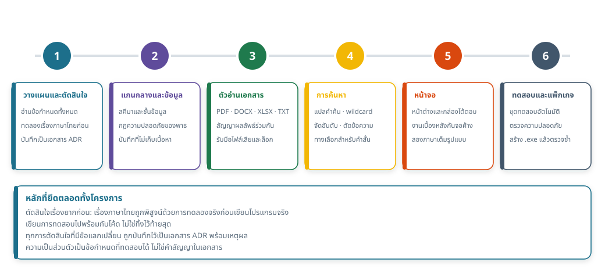
ลำดับนี้ไม่ใช่การทำทีละระยะให้จบแล้วค่อยขยับ แต่เป็นลำดับของ “ความเสี่ยง” ระยะที่ 1 จบเมื่อรู้แน่ว่าจะค้นภาษาไทยด้วยวิธีใด ระยะที่ 2–4 สร้างแกนของระบบพร้อมชุดทดสอบ ของตัวเองไปพร้อมกัน ระยะที่ 5 จึงประกอบหน้าจอบนแกนที่ทดสอบแล้ว และระยะที่ 6 คือการยืนยันทั้งระบบอีกครั้งหลังแพ็กเป็นไฟล์ติดตั้ง
2.4 ขอบเขตที่ตั้งใจ “ไม่ทำ”
การกำหนดสิ่งที่จะไม่ทำมีน้ำหนักเท่ากับสิ่งที่จะทำ รายการต่อไปนี้ถูกตัดออกตั้งแต่ต้น อย่างตั้งใจ ไม่ใช่เพราะทำไม่ทัน
ไม่มี OCR ไม่รองรับ .doc / .xls รุ่นเก่า ไม่รองรับไดรฟ์เครือข่าย NAS และคลาวด์ ไม่มีเว็บเซิร์ฟเวอร์ในเครื่อง ไม่มี WebView ไม่มีการติดตามการใช้งาน ไม่เปิดไฟล์ให้ทำงานเอง ไม่ตามลิงก์หรือทางลัด
3 หลักการทำงานของแต่ละฟังก์ชัน
หัวข้อนี้อธิบาย “วิธีคิด” ของแต่ละฟังก์ชันว่าเลือกใช้หลักการใดและเพราะอะไร ส่วนผังขั้นตอนแบบภาพอยู่ในหัวข้อที่ 6
3.1 การเดินสำรวจไฟล์ และการรู้ว่าไฟล์ใด “เปลี่ยนแล้ว”
การจัดดัชนีรอบที่สองไม่ควรอ่านไฟล์ทั้งหมดใหม่ คำถามคือจะรู้ได้อย่างไรว่าไฟล์เปลี่ยน วิธีที่แม่นยำที่สุดคือคำนวณค่าแฮชจากเนื้อไฟล์ทั้งไฟล์ แต่นั่นแปลว่าต้องอ่านทุกไบต์ ของทุกไฟล์ทุกครั้ง ซึ่งช้าพอ ๆ กับการทำใหม่ทั้งหมด
ระบบจึงใช้ ลายนิ้วมือ (fingerprint) ที่ประกอบจาก ขนาดไฟล์ + เวลาที่แก้ไขล่าสุด + เวอร์ชันของตัวอ่านเอกสาร ค่านี้ได้มาจากข้อมูลที่ระบบไฟล์บอกอยู่แล้ว จึงไม่ต้องเปิดไฟล์ และเมื่อใดที่ตัวอ่านเอกสารถูกปรับปรุง เวอร์ชันที่เปลี่ยนจะทำให้ทุกไฟล์ถูกอ่านใหม่โดยอัตโนมัติ
ข้อแลกเปลี่ยนที่ยอมรับไว้อย่างตั้งใจ: ถ้ามีใครแก้ไฟล์แล้วตั้งเวลาแก้ไขกลับให้เท่าเดิม และขนาดไฟล์เท่าเดิมพอดี ระบบจะถือว่าไฟล์ไม่เปลี่ยน กรณีนี้แก้ได้ด้วยคำสั่ง “สร้างดัชนีใหม่ทั้งหมด” (ดู หัวข้อ 11 หมายเลข 2)
3.2 การค้นภาษาไทย — หัวใจของทั้งระบบ
ดัชนีข้อความเต็มของ SQLite (FTS5) ต้องเลือก “ตัวแยกคำ” ตัวเลือกมาตรฐานคือ
unicode61 ซึ่งแบ่งคำด้วยช่องว่างและเครื่องหมายวรรคตอน
วิธีนี้ใช้ได้ดีกับภาษาอังกฤษ แต่ภาษาไทยไม่เว้นวรรคระหว่างคำ
ข้อความไทยยาว ๆ หนึ่งท่อนจึงกลายเป็น “คำเดียว” ทั้งท่อน
และการค้นคำที่อยู่กลางท่อนนั้นจะไม่พบอะไรเลย
เพื่อยืนยันสมมติฐานนี้ มีการทดลองจริงกับเอกสารต้นแบบ 300 ฉบับ ก่อนตัดสินใจ:
| ตัวแยกคำ | ผลการค้น งบประมาณ ที่อยู่กลางข้อความไทย | จำนวนที่มีอยู่จริง |
|---|---|---|
unicode61 | 154 ครั้ง (948 ครั้งเมื่อใช้การค้นแบบขึ้นต้น) | 1,882 ครั้ง |
trigram | 1,882 ครั้ง | 1,882 ครั้ง |
unicode61 พลาดไปเกินครึ่ง ระบบจึงใช้ ตัวแยกคำแบบ trigram
ซึ่งตัดข้อความเป็นชุดอักขระ 3 ตัวที่เลื่อนทีละตำแหน่ง ทำให้ค้นข้อความย่อย
ได้ทุกภาษาโดยไม่ต้องรู้จักขอบเขตของคำ
ผลข้างเคียงของ trigram ที่ต้องจัดการเพิ่มในชั้นค้นหา มี 3 อย่าง และจัดการครบแล้ว:
- คำค้นสั้นกว่า 3 ตัวอักษรใช้ดัชนีนี้ไม่ได้ → เปลี่ยนไปสแกนแบบมีเพดานจำนวนแถวแทน
- ดัชนีไม่แยกตัวพิมพ์เล็กใหญ่ → ตัวเลือก “ตรงตัวพิมพ์” ถูกตรวจซ้ำในหน่วยความจำ
- ดัชนีไม่รู้จักขอบเขตคำและสัญลักษณ์แทน → “ทั้งคำ” และ
*?ถูกตรวจซ้ำเช่นกัน
3.3 สัญลักษณ์แทน (wildcard) ที่ไม่ใช้ Regular Expression
คำค้นของผู้ใช้เป็นข้อความที่ระบบควบคุมไม่ได้ ถ้านำไปแปลงเป็น regular expression แล้วให้เอนจิน regex ทำงาน จะเปิดช่องให้เกิด ReDoS คือคำค้นบางรูปแบบทำให้ การเทียบใช้เวลาเพิ่มแบบทวีคูณจนโปรแกรมค้าง
ระบบจึงเขียนตัวเทียบ * และ ? เองแบบเชิงเส้น
เทียบทีละอักขระโดยไม่มีการย้อนกลับที่ควบคุมไม่ได้ และจำกัดจำนวนสัญลักษณ์แทนต่อคำไว้ที่ 6 ตัว
เวลาที่ใช้จึงเป็นสัดส่วนตรงกับความยาวข้อความเสมอ
3.4 การแบ่งเอกสารเป็น “หน่วยข้อความ”
ระบบไม่เก็บเอกสารทั้งไฟล์เป็นก้อนเดียว แต่แบ่งเป็นหน่วยย่อยที่มีตำแหน่งกำกับ เพราะผู้ใช้ไม่ได้ต้องการแค่รู้ว่า “อยู่ในไฟล์นี้” แต่ต้องการรู้ว่า “อยู่ตรงไหนของไฟล์”
| รูปแบบ | 1 หน่วย = | ตำแหน่งที่รายงาน |
|---|---|---|
| 1 หน้า | หน้า 2 | |
| DOCX | 1 ย่อหน้า / 1 ช่องตาราง / หัวและท้ายกระดาษ | ย่อหน้า 24 · ตาราง 1 แถว 2 คอลัมน์ 3 |
| XLSX | 1 เซลล์ | ชีต: งบประมาณ 2568, เซลล์: F12 |
| TXT | 1 บรรทัด | บรรทัด 135 |
การเลือกความละเอียดระดับนี้มีเหตุผลเชิงคุณภาพ: ถ้าเก็บ Excel เป็น “ทั้งชีต” ผู้ใช้จะได้ผลลัพธ์ที่บอกแค่ชื่อชีต ซึ่งแทบไม่ช่วยอะไรในไฟล์ที่มีข้อมูลหลายพันแถว และในทางกลับกัน ระบบจะแสดงเซลล์ข้างเคียงในแถวเดียวกันด้วย เพื่อให้ตัวเลขโดด ๆ มีความหมาย
3.5 การจัดอันดับผลลัพธ์
ผลลัพธ์ไม่ได้เรียงตามลำดับที่ฐานข้อมูลคืนมา แต่ให้คะแนนตามหลักที่ว่า “สิ่งที่ผู้ใช้น่าจะหมายถึงมากที่สุดควรอยู่บนสุด” องค์ประกอบของคะแนนคือ
- ตรงที่ชื่อไฟล์ มีน้ำหนักมากกว่าตรงที่เนื้อหา — คนที่พิมพ์ชื่อไฟล์มักต้องการไฟล์นั้นจริง ๆ
- จำนวนครั้งที่พบ ในไฟล์เดียวกัน แต่มีเพดาน เพื่อไม่ให้ไฟล์ยาวชนะไฟล์ที่ตรงกว่า
- ความใหม่ของไฟล์ ใช้เป็นตัวตัดสินเมื่อคะแนนอื่นเท่ากัน
ผู้ใช้ยังเปลี่ยนไปเรียงตามชื่อ ขนาด วันที่ หรือชนิดไฟล์ได้ตลอดเวลา
3.6 ความปลอดภัยของพาธ และการไม่แตะสิ่งที่ไม่ควรแตะ
ทุกพาธที่เข้ามาในระบบถูกตรวจก่อนใช้งานเสมอ พาธที่เป็น UNC (\\server\share)
ไดรฟ์ที่แมปจากเครือข่าย และ URL จะถูกปฏิเสธพร้อมข้อความอธิบาย
เพราะเวอร์ชัน 1 รับเฉพาะพาธในเครื่อง
ระหว่างเดินสำรวจไฟล์ ระบบ ไม่ตามทางลัด (.lnk) และ junction/symlink
เพื่อไม่ให้เกิดวงวนไม่รู้จบและไม่ให้หลุดออกนอกโฟลเดอร์ที่ผู้ใช้อนุญาต
ไฟล์ชั่วคราวของ Office (ขึ้นต้นด้วย ~$) ถูกข้าม
และไฟล์บนคลาวด์ที่ยังไม่ดาวน์โหลดจะถูกข้ามแทนที่จะถูกสั่งให้ดาวน์โหลด
คำสั่ง SQL ทุกคำสั่งใช้พารามิเตอร์ ไม่มีการต่อสตริงจากข้อมูลผู้ใช้
และไม่มีการเรียก eval, exec หรือการสร้างคำสั่งเชลล์จากข้อมูลผู้ใช้ที่ใดเลย
3.7 บันทึกการทำงานที่ไม่เป็นภาระต่อความเป็นส่วนตัว
ระบบมีไฟล์บันทึกไว้ช่วยแก้ปัญหา แต่บันทึกคือช่องรั่วของข้อมูลที่พบบ่อยที่สุด กติกาจึงชัดเจน: บันทึกได้เฉพาะ “สถิติและเหตุการณ์” เช่น จำนวนไฟล์ เวลาที่ใช้ รหัสข้อผิดพลาด ห้ามบันทึกเนื้อหาเอกสาร คำค้นของผู้ใช้ ข้อความรอบคำค้น หรือร่องรอยข้อผิดพลาด ที่มีเนื้อหาเอกสารติดมา และมีการทดสอบอัตโนมัติคอยตรวจข้อนี้โดยเฉพาะ
4 เทคโนโลยีที่ใช้ (Tech stack)
ทุกอย่างในรายการนี้ติดตั้งตอน สร้างโปรแกรม เท่านั้น เมื่อแพ็กเป็นไฟล์ .exe แล้ว
ทุกอย่างถูกรวมไว้ในโฟลเดอร์เดียว เครื่องปลายทางไม่ต้องติดตั้ง Python
และไม่ต้องต่ออินเทอร์เน็ตเลยแม้แต่ครั้งเดียว
4.1 รายละเอียดของแต่ละเทคโนโลยี
Python 3.12.10 — ภาษาหลัก
เลือกเพราะไลบรารีอ่านเอกสารที่ดีที่สุดอยู่ในระบบนิเวศนี้ และเพราะโค้ดอ่านง่าย ซึ่งสำคัญกับโครงการที่ต้องส่งมอบให้คนอื่นดูแลต่อ ทั้งโปรแกรมเป็นแพ็กเกจ Python เดียว ไม่มีโค้ดภาษาอื่นปนอยู่เลย รุ่น 3.12 ถูกตรึงไว้เพราะ PySide6 6.11 ผูกกับรุ่นของ Python ที่ใช้สร้าง
PySide6 6.11.2 (Qt 6) — ส่วนติดต่อผู้ใช้
ใช้กับทุกสิ่งที่ผู้ใช้มองเห็นและสัมผัส และใช้กับงานเบื้องหลังด้วย:
| ส่วนของ Qt | ใช้ทำอะไรในระบบนี้ |
|---|---|
QMainWindow และวิดเจ็ตทั่วไป | หน้าต่างหลัก แถบค้นหา กล่องโต้ตอบทั้งหมด |
QAbstractItemModel + QTreeView | ตารางผลลัพธ์แบบมีแถวย่อย (ไฟล์ → ตำแหน่งที่พบ) |
QStyledItemDelegate | วาดข้อความที่ตรงกันพร้อมแถบไฮไลต์ และวาดปุ่มเปิดโฟลเดอร์ด้วยมือ |
QThread + signal/slot | ย้ายงานหนักออกจากหน้าจอ และส่งความคืบหน้ากลับอย่างปลอดภัยข้ามเธรด |
QTextCharFormat | ไฮไลต์คำค้นในกล่องพรีวิวด้วย “รูปแบบตัวอักษร” ไม่ใช่การแทรกแท็ก |
QSettings / ไฟล์ JSON | จำตำแหน่งหน้าต่าง ความกว้างคอลัมน์ และค่าที่ผู้ใช้ตั้งไว้ |
Qt WebEngine (เบราว์เซอร์ฝังในโปรแกรม) และ Qt Network ถูกตัดออกจากไฟล์ที่แจกจ่าย
เพราะโปรแกรมนี้ต้องไม่มีความสามารถในการต่อเครือข่ายตั้งแต่ต้น
การไฮไลต์ข้อความจึงใช้การวาดเอง ไม่ใช่การเรนเดอร์ HTML ซึ่งปลอดภัยกว่าด้วย
เพราะข้อความจากเอกสารของผู้ใช้จะไม่มีวันถูกตีความเป็นโค้ด
SQLite 3.49 + FTS5 (trigram) — ฐานข้อมูลและดัชนี
SQLite มากับ Python อยู่แล้ว ไม่ต้องติดตั้งเซิร์ฟเวอร์ฐานข้อมูล ไม่ต้องเปิดพอร์ต และเก็บทุกอย่างเป็นไฟล์เดียวที่คัดลอกหรือลบได้ตรงไปตรงมา ส่วนขยาย FTS5 ให้ดัชนีข้อความเต็มที่เร็วพอสำหรับงานนี้ และรองรับตัวแยกคำแบบ trigram ซึ่งเป็นเหตุผลที่ทำให้ค้นภาษาไทยได้จริง
ค่าที่ตั้งไว้สำหรับการใช้งานจริง:
journal_mode=WAL— ให้ฝั่งค้นหาอ่านได้ขณะที่ฝั่งจัดดัชนีกำลังเขียนsynchronous=NORMAL— สมดุลระหว่างความเร็วกับความปลอดภัยของข้อมูลsecure_delete=ON— ข้อความที่ถูกลบออกจากดัชนีจะถูกเขียนทับจริง ไม่ค้างอยู่ในไฟล์foreign_keys=ON— ลบไฟล์แล้วหน่วยข้อความของไฟล์นั้นถูกลบตามอัตโนมัติ
ไลบรารีอ่านเอกสาร
| ไลบรารี | รูปแบบ | เหตุผลที่เลือก และสิ่งที่ต้องระวัง |
|---|---|---|
| PyMuPDF 1.26.5 | เร็วและดึงข้อความไทยได้ถูกต้องกว่าตัวเลือกอื่นที่ทดลอง · สัญญาอนุญาตเป็น AGPL-3.0 หรือแบบเชิงพาณิชย์ ซึ่งต้องตัดสินใจก่อนแจกจ่ายออกนอกองค์กร (ดูหัวข้อ 12.4) | |
| python-docx 1.2.0 | DOCX | เข้าถึงย่อหน้า ตาราง หัวและท้ายกระดาษได้ตามลำดับจริงในเอกสาร · ไม่รองรับ .doc รุ่นเก่า |
| openpyxl 3.1.5 | XLSX | อ่านแบบ read-only ทีละแถวจึงไม่กินหน่วยความจำ · อ่านค่าที่บันทึกไว้ ไม่คำนวณสูตรใหม่ · ข้ามชีตที่ซ่อนไว้ตามที่ผู้ใช้ตั้งใจซ่อน |
| lxml 6.0.2 | — | ตัวอ่าน XML ที่ python-docx และ openpyxl เรียกใช้เบื้องหลัง · ถูกตั้งค่าไม่ให้ประมวลผล entity ภายนอก จึงไม่เปิดช่องโจมตีแบบ XXE |
| ไม่มีไลบรารีเพิ่ม | TXT | ตรวจรหัสอักขระเอง รองรับ UTF-8 (มีและไม่มี BOM), UTF-16 และ CP874/TIS-620 ซึ่งพบบ่อยในเอกสารไทยเก่า |
PyInstaller — การแพ็กเป็นไฟล์ .exe
ใช้โหมด onedir (โฟลเดอร์เดียวที่มีทุกอย่าง) ไม่ใช่ onefile เพราะ onefile ต้องแตกไฟล์ลงโฟลเดอร์ชั่วคราวทุกครั้งที่เปิด ซึ่งช้ากว่า และมักถูกโปรแกรมป้องกันไวรัสสงสัย
หลังแพ็กเสร็จมีขั้นตอน ตัดไฟล์ที่ไม่ควรติดไปด้วย โดยเฉพาะ
_socket.pyd, _ssl.pyd, libssl, libcrypto
และ Qt6Network.dll แล้วมีสคริปต์ตรวจซ้ำว่าไฟล์เหล่านี้ไม่มีอยู่จริง
นี่คือเหตุผลที่พูดได้ว่าโปรแกรมนี้ “ต่อเน็ตไม่ได้” ไม่ใช่แค่ “ไม่ต่อ”
pytest — ชุดทดสอบ
การทดสอบ 620 รายการครอบคลุมตั้งแต่การแปลคำค้นไปจนถึงหน้าจอจริงและไฟล์ที่แพ็กแล้ว เอกสารทดสอบทั้งหมดถูกสร้างขึ้นใหม่ตอนรัน จึงไม่มีเอกสารจริงหรือเอกสารลับ อยู่ในโครงการนี้เลย รายละเอียดอยู่ในหัวข้อที่ 13
4.2 โครงสร้างของซอร์สโค้ด
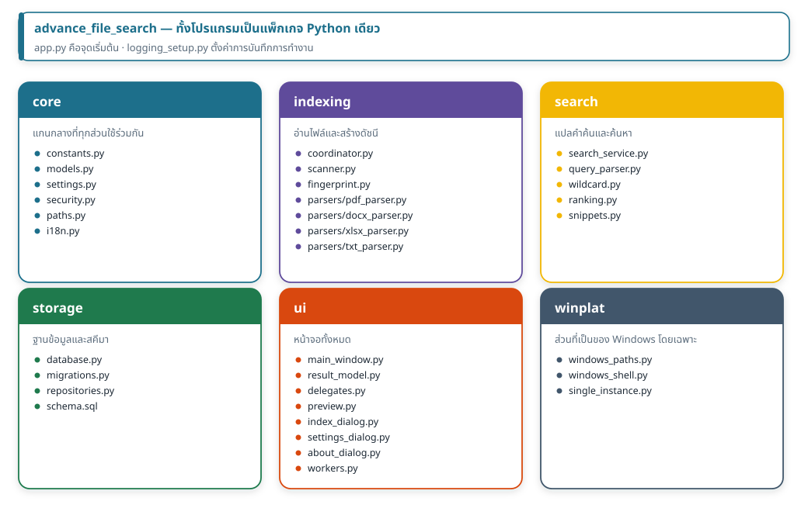
การแบ่งนี้ไม่ได้แบ่งเพื่อความสวยงาม แต่บังคับทิศทางการพึ่งพา:
ui เรียก search และ indexing ได้
search และ indexing เรียก storage และ core ได้
แต่ไม่มีชั้นล่างใดเรียกกลับขึ้นไปหา ui เลย
ผลคือตรรกะทั้งหมดทดสอบได้โดยไม่ต้องเปิดหน้าต่าง และเปลี่ยนหน้าจอได้โดยไม่กระทบแกนของระบบ
5 โครงสร้างการทำงานโดยรวม
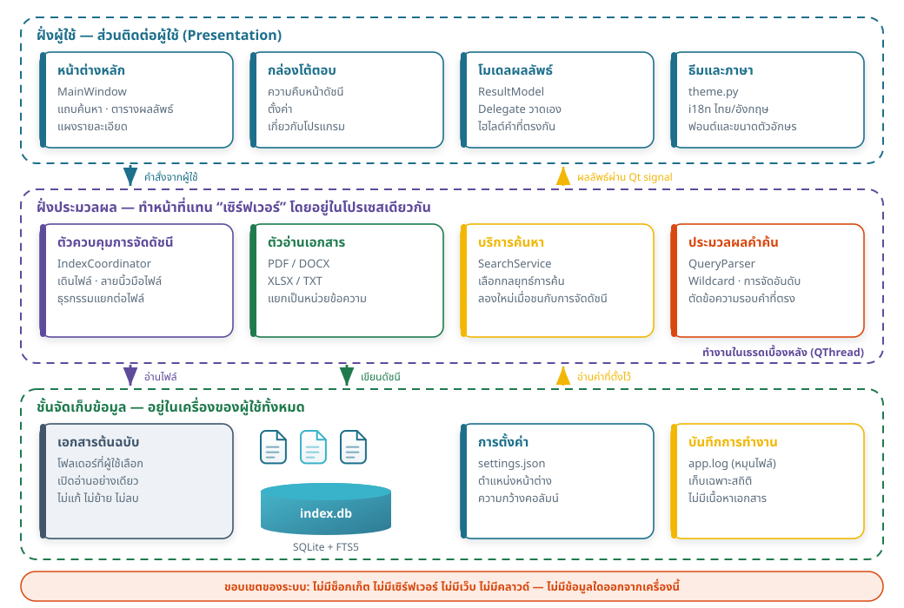
5.1 ฝั่งผู้ใช้ (Presentation)
ชั้นนี้มีหน้าที่เดียวคือรับคำสั่งและแสดงผล ห้ามอ่านไฟล์เอกสารเอง ห้ามค้นฐานข้อมูลก้อนใหญ่เอง งานที่ทำในชั้นนี้ต้องจบภายในเสี้ยววินาที มิฉะนั้นหน้าต่างจะค้าง การอ่านข้อมูลเล็ก ๆ เช่น “ดัชนีมีไฟล์กี่ไฟล์” ยังทำได้ในเธรดนี้ เพราะเป็นการอ่านที่จบทันที
5.2 ฝั่งประมวลผล (ทำหน้าที่แทนเซิร์ฟเวอร์)
ชั้นนี้คือ “เครื่องยนต์” ของระบบ ประกอบด้วยตัวควบคุมการจัดดัชนี ตัวอ่านเอกสาร บริการค้นหา และตัวประมวลผลคำค้น ทั้งหมดทำงานในเธรดเบื้องหลัง และสื่อสารกับหน้าจอผ่านสัญญาณของ Qt เท่านั้น ข้อดีที่ได้จากการแยกแบบนี้คือ ชั้นนี้ถูกทดสอบได้โดยไม่ต้องมีหน้าจอเลย ซึ่งเป็นเหตุผลที่การทดสอบส่วนใหญ่ของโครงการรันได้เร็วมาก
5.3 ชั้นจัดเก็บข้อมูล
| สิ่งที่เก็บ | เก็บที่ไหน | หมายเหตุ |
|---|---|---|
| ดัชนีค้นหา | %LOCALAPPDATA%\Advance File Search\index\index.db | SQLite + WAL · ลบได้ปลอดภัย ระบบจะสร้างใหม่ |
| ค่าที่ตั้งไว้ | %LOCALAPPDATA%\Advance File Search\settings.json | ข้อความล้วน เปิดอ่านได้ |
| บันทึกการทำงาน | %LOCALAPPDATA%\Advance File Search\logs\app.log | หมุนไฟล์เมื่อครบ 5 MB · ไม่มีเนื้อหาเอกสาร |
| เอกสารต้นฉบับ | ที่เดิมของผู้ใช้ | เปิดอ่านอย่างเดียว ไม่ถูกคัดลอกไปไว้ที่อื่น |
ข้อมูลทั้งหมดอยู่ในโปรไฟล์ของผู้ใช้ปัจจุบัน ไม่ใช่ในโฟลเดอร์โปรแกรม ผลคือลบโฟลเดอร์โปรแกรมทิ้งแล้วดัชนียังอยู่ และผู้ใช้คนละคนบนเครื่องเดียวกัน จะไม่เห็นดัชนีของกันและกัน
6 ผังการทำงานของแต่ละฟังก์ชัน
6.1 ผังการจัดทำดัชนี
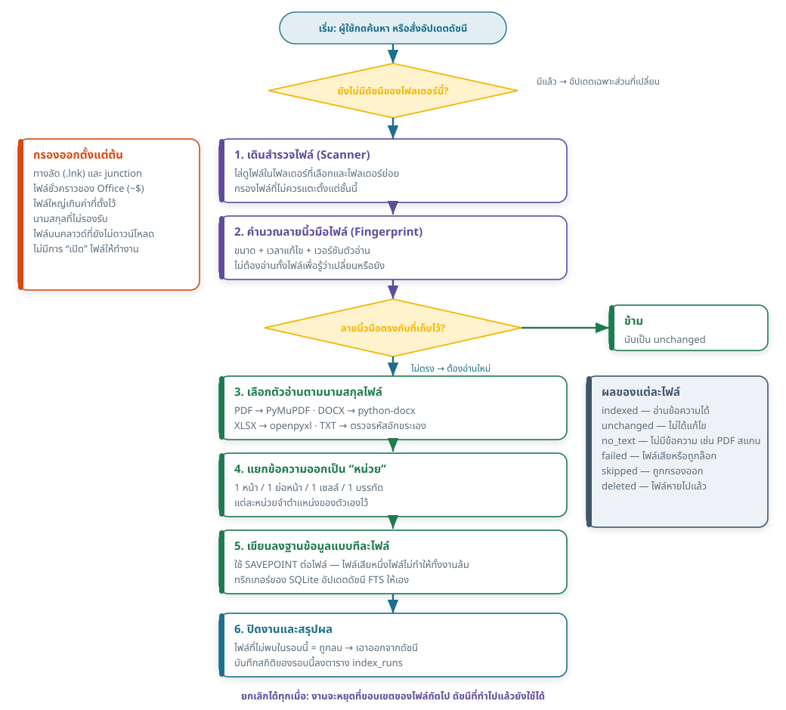
- เดินสำรวจไฟล์ ไล่ดูไฟล์ในโฟลเดอร์ที่เลือกและโฟลเดอร์ย่อยทั้งหมด ไฟล์ที่ไม่ควรแตะถูกกรองออกตั้งแต่ชั้นนี้ ทั้งทางลัด junction ไฟล์ชั่วคราวของ Office ไฟล์ใหญ่เกินค่าที่ตั้งไว้ และนามสกุลที่ไม่รองรับ
- คำนวณลายนิ้วมือ จาก ขนาด + เวลาแก้ไข + เวอร์ชันตัวอ่าน แล้วเทียบกับค่าที่เก็บไว้ครั้งก่อน
- ตัดสินใจ
ถ้าตรงกัน ข้ามไปเลย (นับเป็น
unchanged) ถ้าไม่ตรง จึงเปิดอ่านไฟล์นั้น - เลือกตัวอ่านและแยกข้อความ ตามนามสกุลไฟล์ แล้วแยกเป็นหน่วยข้อความพร้อมตำแหน่งของแต่ละหน่วย
- บันทึกแบบทีละไฟล์
แต่ละไฟล์เขียนใน
SAVEPOINTของตัวเอง ไฟล์ที่พังจะถูกย้อนคืนเฉพาะของมัน ทริกเกอร์ของฐานข้อมูลอัปเดตดัชนี FTS ให้เองโดยที่โปรแกรมไม่ต้องสั่ง - ปิดงาน ไฟล์ที่ไม่ถูกพบในรอบนี้ถือว่าถูกลบไปแล้ว จึงเอาออกจากดัชนี แล้วบันทึกสถิติของรอบนี้ไว้
6.2 ผังการค้นหา
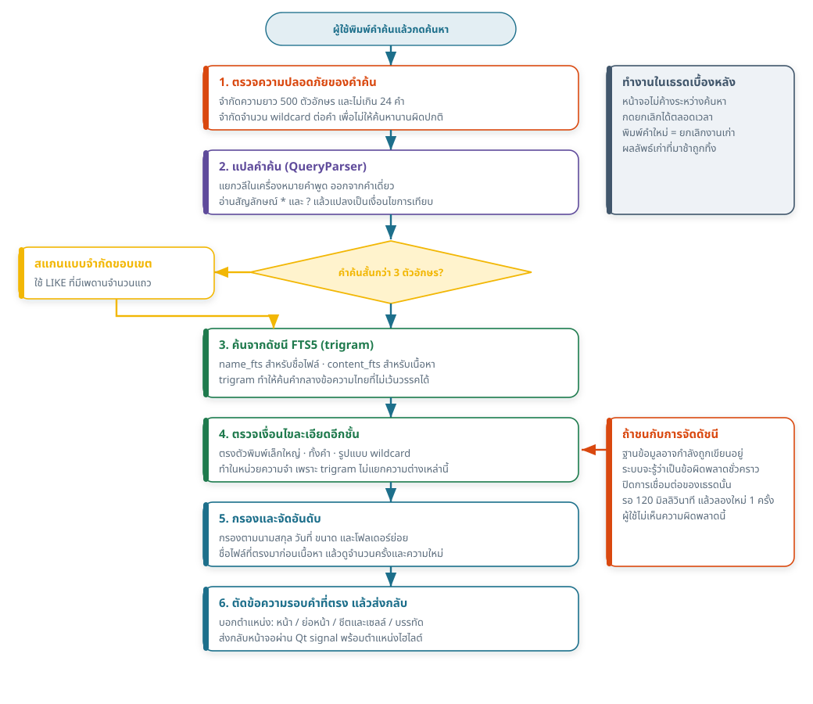
- ตรวจคำค้นก่อน จำกัดความยาวไม่เกิน 500 ตัวอักษร ไม่เกิน 24 คำ และจำกัดสัญลักษณ์แทนต่อคำไว้ 6 ตัว เพื่อไม่ให้คำค้นที่ผิดปกติทำให้ระบบทำงานนานเกินควร
- แปลคำค้น
แยกวลีในเครื่องหมายคำพูดออกจากคำเดี่ยว และแปลง
*?เป็นเงื่อนไขการเทียบ - เลือกเส้นทาง คำที่สั้นกว่า 3 ตัวอักษรใช้ดัชนี trigram ไม่ได้ จึงเปลี่ยนไปสแกนแบบมีเพดานจำนวนแถวแทน ส่วนคำปกติจะค้นจากดัชนี FTS5
- ตรวจเงื่อนไขละเอียดอีกชั้น ตรงตัวพิมพ์ ทั้งคำ และรูปแบบสัญลักษณ์แทน ถูกตรวจในหน่วยความจำ เพราะดัชนีไม่แยกความต่างเหล่านี้
- กรองและจัดอันดับ ตามนามสกุล วันที่ ขนาด และโฟลเดอร์ย่อย แล้วเรียงตามเกณฑ์ในหัวข้อ 3.5
- เตรียมผลลัพธ์ ตัดข้อความรอบคำที่ตรง พร้อมตำแหน่งไฮไลต์และป้ายบอกตำแหน่งในเอกสาร แล้วส่งกลับหน้าจอ
6.3 ผังการค้นหาเมื่อยังไม่มีดัชนี หรือดัชนีเก่า
ตั้งแต่รอบปรับปรุงที่ 2 ปุ่ม “อัปเดตดัชนี” ถูกเอาออกจากหน้าจอหลัก เพราะผู้ใช้ไม่ควรต้องจำ ว่าต้องกดอะไรก่อน พฤติกรรมใหม่คือ
| สถานการณ์ | สิ่งที่เกิดขึ้นเมื่อกดค้นหา |
|---|---|
| ยังไม่เคยจัดดัชนีโฟลเดอร์นี้ | สร้างดัชนีให้ทันทีพร้อมกล่องแสดงความคืบหน้า แล้วค้นหาต่อให้เอง |
| มีดัชนีอยู่แล้ว | แสดงผลจากดัชนีทันที แล้วตรวจหาไฟล์ที่เปลี่ยนในเบื้องหลังโดยไม่บล็อกหน้าจอ |
| เพิ่งค้นไปเมื่อครู่ | ไม่ตรวจซ้ำ (มีการหน่วงเวลาไว้) เพื่อไม่ให้เดินไฟล์ซ้ำโดยไม่จำเป็น |
| ผู้ใช้แค่พิมพ์ ยังไม่กดค้นหา | ไม่มีการจัดดัชนีใด ๆ เกิดขึ้น |
7 ผังการเชื่อมต่อระหว่างฝั่งผู้ใช้กับฝั่งประมวลผล
เนื่องจากไม่มีเซิร์ฟเวอร์จริง การ “เชื่อมต่อ” ที่ต้องออกแบบให้ดีจึงเป็นการเชื่อมต่อ ระหว่างเธรดหน้าจอกับเธรดเบื้องหลัง และการเชื่อมต่อของแต่ละเธรดกับฐานข้อมูล ซึ่งเป็นจุดที่เกิดข้อบกพร่องได้ง่ายที่สุดถ้าออกแบบผิด
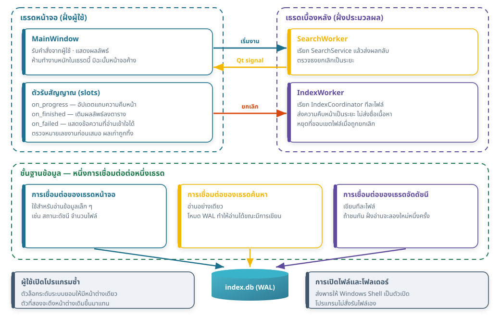
7.1 กติกา 4 ข้อของการสื่อสารข้ามเธรด
- 1. ส่งข้อมูลผ่านสัญญาณเท่านั้น
- เธรดเบื้องหลังไม่แตะวิดเจ็ตใด ๆ โดยตรง แต่ส่งสัญญาณกลับมาให้เธรดหน้าจอเป็นผู้วาด
- 2. ทุกผลลัพธ์มีหมายเลขงานกำกับ
- ผู้ใช้พิมพ์คำใหม่ระหว่างที่คำเก่ายังค้นไม่เสร็จได้เสมอ เมื่อผลของงานเก่ากลับมา หน้าจอจะเทียบหมายเลขงานก่อน ถ้าไม่ใช่งานล่าสุดก็ทิ้งไป ผู้ใช้จึงไม่มีทางเห็นผลลัพธ์ของคำค้นเก่า
- 3. หนึ่งเธรด หนึ่งการเชื่อมต่อฐานข้อมูล
- การเชื่อมต่อ SQLite ไม่ถูกส่งข้ามเธรด แต่ละเธรดเปิดของตัวเองและปิดเมื่อจบงาน โหมด WAL ทำให้ฝั่งอ่านทำงานได้ขณะที่ฝั่งเขียนกำลังทำงาน
- 4. การยกเลิกคือธงที่ถูกตรวจเป็นระยะ ไม่ใช่การฆ่าเธรด
- งานเบื้องหลังตรวจธงยกเลิกที่จุดที่ปลอดภัยเท่านั้น จึงไม่มีทางหยุดกลางการเขียนฐานข้อมูล
vtable constructor failed: content_fts แล้วคืนผลลัพธ์ว่าง ซึ่งผู้ใช้จะเข้าใจผิดว่า “ไม่พบ”
วิธีแก้คือจำแนกข้อผิดพลาดของ SQLite ออกเป็น “ชั่วคราว” กับ “ถาวร”
เมื่อเจอชนิดชั่วคราว ระบบจะปิดการเชื่อมต่อของเธรดนั้น รอ 120 มิลลิวินาที แล้วลองใหม่หนึ่งครั้ง
มีการทดสอบ 4 รายการคุมพฤติกรรมนี้ รวมถึงการทดสอบที่รันตัวอ่านจริงชนกับตัวเขียนจริง
7.2 การเชื่อมต่อกับระบบปฏิบัติการ
| เรื่อง | วิธีที่ใช้ | เหตุผล |
|---|---|---|
| เปิดโปรแกรมซ้ำ | ตัวล็อกระดับระบบ (named mutex) | ให้มีหน้าต่างเดียว ป้องกันสองโปรเซสเขียนดัชนีพร้อมกัน |
| เปิดไฟล์ / เปิดโฟลเดอร์ | ส่งพาธให้ Windows Shell | โปรแกรมไม่สั่งรันไฟล์เอง และไม่ประกอบคำสั่งเชลล์จากข้อมูลผู้ใช้ |
| พาธยาวเกิน 260 ตัวอักษร | ใช้รูปแบบพาธยาวของ Windows ภายใน | เอกสารราชการไทยมักมีชื่อโฟลเดอร์ยาว จึงชนเพดานนี้ได้ง่าย |
8 ผังการไหลของข้อมูล
แผนภาพนี้ตอบคำถามสำคัญที่สุดของโครงการ: ข้อมูลแต่ละชิ้นมาจากไหน ไปไหนต่อ และหยุดอยู่ที่ใด
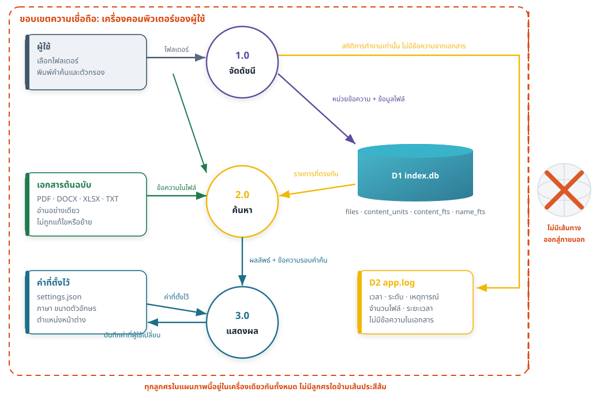
| เส้นทาง | ข้อมูลที่ไหล | ปลายทาง |
|---|---|---|
| ผู้ใช้ → 1.0 จัดดัชนี | พาธโฟลเดอร์ที่เลือก | อยู่ในหน่วยความจำและในตาราง roots |
| เอกสาร → 1.0 | ข้อความที่ดึงจากไฟล์ | ตาราง content_units ในเครื่อง |
| 1.0 → D1 | ข้อมูลไฟล์ + หน่วยข้อความ | index.db |
| ผู้ใช้ → 2.0 ค้นหา | คำค้นและตัวกรอง | ใช้แล้วทิ้ง ไม่ถูกบันทึกลงไฟล์ใด |
| D1 → 2.0 → 3.0 | รายการที่ตรงกันและข้อความรอบคำค้น | แสดงบนหน้าจอ |
| 1.0 → D2 | สถิติ เช่น จำนวนไฟล์ เวลาที่ใช้ รหัสข้อผิดพลาด | app.log — ไม่มีข้อความจากเอกสารและไม่มีคำค้น |
| ออกนอกเครื่อง | ไม่มี | ไม่มีเส้นทางนี้อยู่ในระบบ |
9 การออกแบบ UX/UI
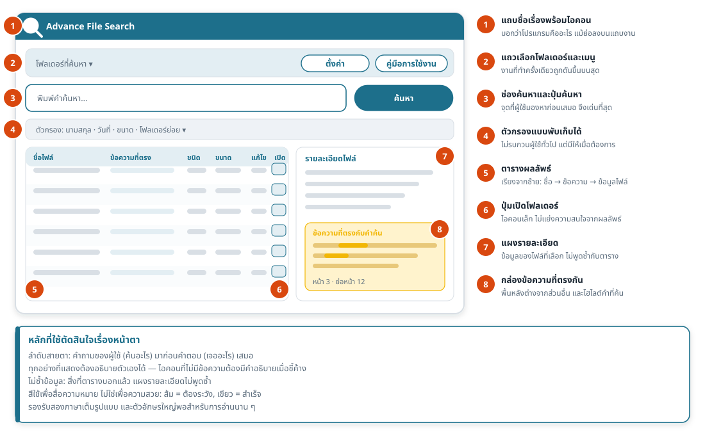
9.1 หลักที่ใช้ตัดสินใจ
- ลำดับสายตาไล่จากคำถามไปหาคำตอบ
- บนสุดคือสิ่งที่ผู้ใช้ต้องตอบก่อน (ค้นที่ไหน) ถัดมาคือคำถาม (ค้นอะไร) แล้วจึงเป็นคำตอบ (เจออะไร) ผู้ใช้จึงไม่ต้องกวาดสายตาไปมา
- งานที่ทำครั้งเดียวถูกดันขึ้นบน งานที่ทำบ่อยอยู่กลางจอ
- การเลือกโฟลเดอร์และการตั้งค่าเป็นงานที่ทำนาน ๆ ครั้ง จึงอยู่แถวบนในรูปแบบที่เล็กลง ส่วนช่องค้นหาซึ่งใช้ทุกครั้งถูกทำให้เด่นที่สุดบนหน้าจอ
- ไม่แสดงข้อมูลซ้ำ
- สิ่งที่ตารางบอกแล้ว (ชนิดไฟล์ ขนาด วันที่) แผงรายละเอียดจะไม่พูดซ้ำ พื้นที่ที่ประหยัดได้ถูกยกให้กล่องข้อความที่ตรงกัน ซึ่งเป็นข้อมูลที่ผู้ใช้ต้องการจริง
- สีสื่อความหมาย ไม่ใช่เพื่อความสวย
- สีน้ำเงินเขียวคือสีของระบบ สีเหลืองอำพันคือ “ข้อความที่ตรงกับคำค้น” และสิ่งที่ต้องระวัง สีเขียวคือสำเร็จ สีส้มแดงคือข้อผิดพลาดหรือคำเตือน และไม่ใช้สีเป็นตัวสื่อความหมายเพียงอย่างเดียว เสมอ — มีข้อความกำกับด้วยทุกครั้ง
- ทุกอย่างต้องอธิบายตัวเองได้
- ปุ่มที่เป็นไอคอนล้วนต้องมีคำอธิบายเมื่อชี้ค้าง ทุกตัวควบคุมหลักมีชื่อสำหรับโปรแกรมอ่านหน้าจอ และข้อความแสดงข้อผิดพลาดต้องบอกว่าจะทำอะไรต่อได้ ไม่ใช่บอกแค่ว่าล้มเหลว
- สองภาษาเต็มรูปแบบตั้งแต่ต้น
- ข้อความทุกชิ้นบนหน้าจออยู่ในตารางคำแปลไทย–อังกฤษ ไม่มีข้อความฝังในโค้ด และมีการทดสอบตรวจว่าคีย์ของทั้งสองภาษาตรงกันเสมอ ไม่มีคำแปลตกหล่น
9.2 การอ่านง่าย
ขนาดตัวอักษรพื้นฐานถูกเพิ่มขึ้นตามที่ผู้ใช้ร้องขอ โดยมีขั้นต่ำ 11 pt และแถวในตารางสูงขึ้นตาม เพราะภาษาไทยมีสระบนและวรรณยุกต์ที่ต้องการพื้นที่แนวตั้งมากกว่าภาษาอังกฤษ ข้อความที่ตรงกับคำค้นถูกไฮไลต์ด้วยพื้นหลังสีอำพัน ไม่ใช่ด้วยการทำตัวหนา เพราะตัวหนาในฟอนต์ไทยอ่านยากกว่าเมื่ออยู่กลางประโยค
10 การออกแบบและโครงสร้างฐานข้อมูล
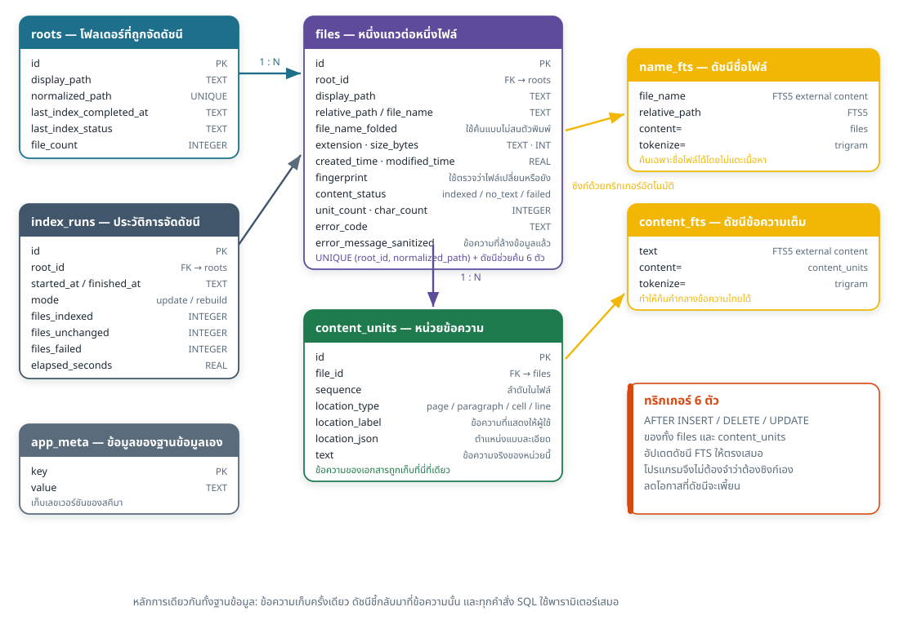
10.1 ตารางและหน้าที่
| ตาราง | เก็บอะไร | จุดสำคัญ |
|---|---|---|
roots | โฟลเดอร์ที่ถูกจัดดัชนี | เก็บทั้งพาธที่แสดงให้ผู้ใช้เห็นและพาธที่ทำให้เป็นมาตรฐานแล้ว (ใช้เทียบความซ้ำ) |
files | หนึ่งแถวต่อหนึ่งไฟล์ | มีลายนิ้วมือไว้ตรวจการเปลี่ยนแปลง สถานะของเนื้อหา และรหัสข้อผิดพลาดถ้าอ่านไม่ได้ |
content_units | หน่วยข้อความพร้อมตำแหน่ง | ข้อความของเอกสารถูกเก็บที่นี่ที่เดียว ทั้งระบบ |
content_fts | ดัชนีข้อความเต็ม | ตารางเสมือน FTS5 แบบ external content — ชี้กลับไปที่ content_units |
name_fts | ดัชนีชื่อไฟล์และพาธสัมพันธ์ | ทำให้การค้น “เฉพาะชื่อไฟล์” ไม่ต้องแตะข้อมูลเนื้อหาเลย |
index_runs | ประวัติการจัดดัชนีแต่ละรอบ | จำนวนไฟล์แต่ละประเภทผล เวลาที่ใช้ และเวอร์ชันของโปรแกรมที่ทำรอบนั้น |
app_meta | ข้อมูลของฐานข้อมูลเอง | เก็บเลขเวอร์ชันสคีมา ใช้ตัดสินใจเรื่องการย้ายรุ่นในอนาคต |
10.2 การตัดสินใจสำคัญ 4 ข้อ
- 1. ใช้ FTS5 แบบ external content — ไม่เก็บข้อความซ้ำสองที่
-
ถ้าใช้ FTS5 แบบปกติ ข้อความทั้งหมดจะถูกเก็บซ้ำอีกชุดในตารางดัชนี ทำให้ไฟล์ใหญ่ขึ้นเกือบเท่าตัว
แบบ external content ให้ดัชนีชี้กลับมาที่
content_unitsแทน ต้นทุนที่ต้องจ่ายคือ ดัชนีกับข้อมูลต้องถูกซิงก์ให้ตรงกันเสมอ ซึ่งจัดการด้วยข้อถัดไป - 2. ให้ทริกเกอร์ของฐานข้อมูลเป็นผู้ซิงก์ดัชนี
-
มีทริกเกอร์ 6 ตัว (เพิ่ม/ลบ/แก้ไข ของทั้ง
filesและcontent_units) ที่อัปเดตดัชนี FTS ให้เอง เหตุผลคือความถูกต้องไม่ควรขึ้นกับการที่โปรแกรมเมอร์ “จำได้ว่าต้องอัปเดตดัชนีด้วย” ทุกจุดที่เขียนข้อมูล — ให้ฐานข้อมูลบังคับเองปลอดภัยกว่า - 3. แยกดัชนีชื่อไฟล์ออกจากดัชนีเนื้อหา
-
ผู้ใช้จำนวนมากค้นแค่ชื่อไฟล์ ถ้ามีดัชนีเดียวรวมกัน ทุกการค้นชื่อไฟล์จะต้องกวาดผ่านข้อมูล
เนื้อหาทั้งหมด การแยก
name_ftsออกมาทำให้โหมด “ชื่อไฟล์เท่านั้น” เร็วขึ้นมาก โดยไม่ต้องเพิ่มความซับซ้อนของคำสั่งค้นหา - 4. ทำให้ทุกอย่างสร้างใหม่ได้เสมอ
-
ดัชนีไม่ใช่ข้อมูลต้นฉบับ มันเป็นผลลัพธ์ที่คำนวณจากเอกสารของผู้ใช้
ดังนั้นการลบไฟล์
index.dbทิ้งจึงปลอดภัยเสมอ — เสียแค่เวลาในการจัดดัชนีใหม่ หลักนี้ทำให้การแก้ปัญหาภาคสนามง่ายมาก และทำให้ไม่ต้องเขียนระบบสำรองข้อมูล
10.3 ตัวเลขจากการวัดจริง
| รายการ | ค่าที่วัดได้ (เอกสารข้อความสังเคราะห์ 1,000 ไฟล์) |
|---|---|
| สร้างดัชนีครั้งแรก | 2.95 วินาที |
| อัปเดตเมื่อไม่มีอะไรเปลี่ยน | 0.21 วินาที |
| ขนาดไฟล์ดัชนี | 1.8 MB |
| ค้นคำไทย / คำอังกฤษ | น้อยกว่า 10 มิลลิวินาที |
ขนาดดัชนีโดยประมาณอยู่ที่ราว 30–60% ของขนาดข้อความที่ดึงได้จากเอกสาร (ไม่ใช่ขนาดของไฟล์เอกสาร — ไฟล์ PDF ที่มีภาพเยอะจะให้ดัชนีเล็กมาก)
11 อธิบายทุกเมนูและทุกฟังก์ชันโดยละเอียด
หัวข้อนี้อธิบายทุกสิ่งที่อยู่บนหน้าจอ โดยอ้างอิงหมายเลขที่กำกับไว้ในภาพแต่ละภาพ
11.1 หน้าจอเมื่อเปิดโปรแกรมครั้งแรก
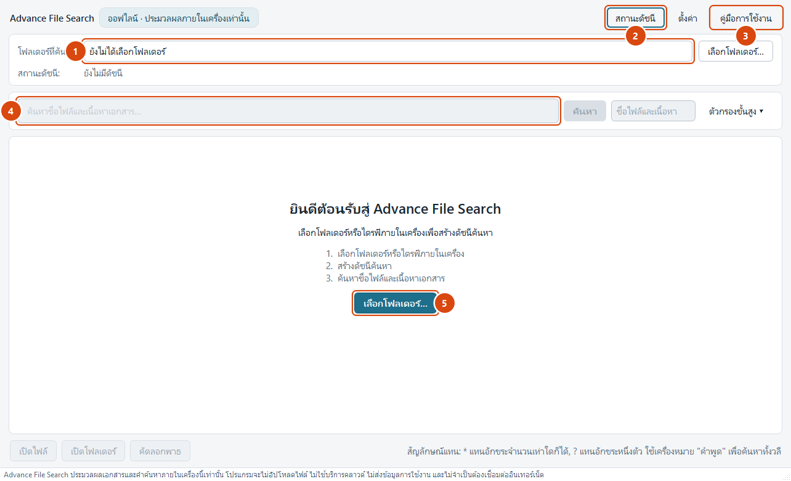
- ช่องแสดงโฟลเดอร์ที่ค้น ตอนนี้ยังว่าง เมื่อเคยใช้งานแล้วจะกลายเป็นรายการโฟลเดอร์ล่าสุดให้เลือกซ้ำได้ทันที
- เมนูสถานะดัชนี รวมคำสั่งที่เกี่ยวกับดัชนีทั้งหมดไว้ที่เดียว (อธิบายละเอียดในหัวข้อ 11.7)
- ปุ่มคู่มือการใช้งาน เปิดคู่มือฉบับ HTML ที่ติดมากับโปรแกรมด้วยเบราว์เซอร์ที่เครื่องมีอยู่ เป็นไฟล์ในเครื่องล้วน
- ช่องค้นหา ถูกปิดไว้จนกว่าจะเลือกโฟลเดอร์ เพราะการค้นหาโดยไม่มีขอบเขตไม่มีความหมาย การปิดไว้ชัดเจนกว่าการปล่อยให้กดแล้วขึ้นข้อความผิดพลาด
- ปุ่มเลือกโฟลเดอร์ ทางเข้าหลักของหน้าจอนี้ พร้อมคำอธิบาย 3 ขั้นตอนสำหรับผู้ใช้ครั้งแรก
\\server\share ไดรฟ์ที่แมปมาจากเครือข่าย และที่เก็บบนคลาวด์ที่ยังไม่ดาวน์โหลด
จะถูกปฏิเสธพร้อมบอกเหตุผล เวอร์ชัน 1 รองรับเฉพาะพาธในเครื่องเท่านั้น
11.2 หน้าจอหลัก
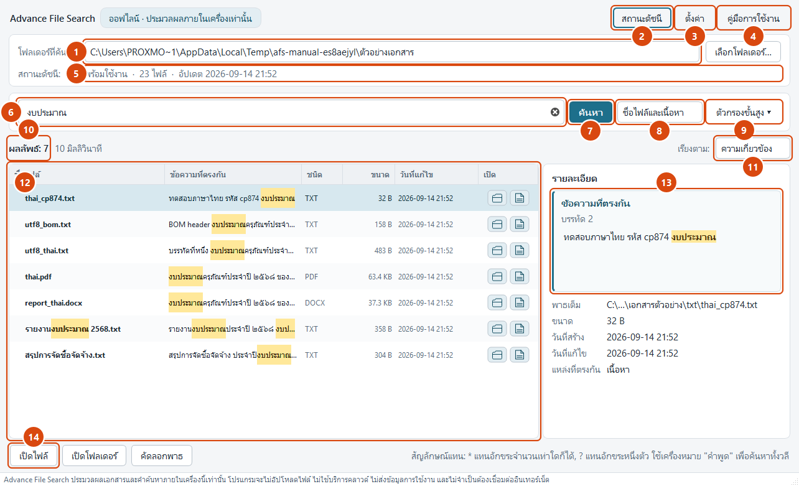
- โฟลเดอร์ที่ค้น แสดงโฟลเดอร์ปัจจุบัน และเก็บโฟลเดอร์ที่เคยใช้ไว้ให้เลือกสลับได้ทันที การเปลี่ยนโฟลเดอร์ที่นี่คือการเปลี่ยนขอบเขตการค้นทั้งหมด
- เมนูสถานะดัชนี คำสั่งอัปเดตดัชนี สร้างใหม่ทั้งหมด ลบดัชนี เปิดโฟลเดอร์ข้อมูลโปรแกรม และเกี่ยวกับโปรแกรม
- ปุ่มตั้งค่า เปิดกล่องตั้งค่า 3 แท็บ (หัวข้อ 11.8)
- ปุ่มคู่มือการใช้งาน เปิดไฟล์คู่มือในเบราว์เซอร์ ถ้าไฟล์คู่มือหายไปจากชุดติดตั้ง ระบบจะบอกตรง ๆ ว่าหาไม่พบ
- แถบสถานะดัชนี บอกว่าดัชนีพร้อมใช้หรือไม่ มีกี่ไฟล์ และอัปเดตล่าสุดเมื่อใด ถ้าเห็นว่าจำนวนไฟล์ไม่ตรงกับความจริง แปลว่าถึงเวลาอัปเดตดัชนี
- ช่องคำค้น
พิมพ์คำหรือวลี ใช้เครื่องหมายคำพูดเพื่อค้นทั้งวลี ใช้
*แทนอักขระกี่ตัวก็ได้ และ?แทนอักขระหนึ่งตัว กดปุ่มกากบาทเพื่อล้างคำค้น - ปุ่มค้นหา ถ้ายังไม่มีดัชนี ปุ่มนี้จะสร้างดัชนีให้ก่อนแล้วค้นหาต่อให้เอง ถ้ามีดัชนีแล้วจะแสดงผลทันทีและตรวจหาไฟล์ที่เปลี่ยนในเบื้องหลัง
- ขอบเขตการค้น เลือกได้ว่าจะค้นเฉพาะชื่อไฟล์ เฉพาะเนื้อหา หรือทั้งสองอย่าง การค้นเฉพาะชื่อไฟล์เร็วที่สุดเพราะใช้ดัชนีคนละตัว
- ตัวกรองขั้นสูง พับเก็บไว้โดยปริยาย กดเพื่อกางตัวเลือกเพิ่มเติม (หัวข้อ 11.5)
- จำนวนผลลัพธ์และเวลาที่ใช้ บอกจำนวนไฟล์ที่พบและเวลาที่ใช้ค้นเป็นมิลลิวินาที ถ้าผลลัพธ์ถูกจำกัดจำนวนไว้ จะบอกตรงนี้ด้วย
- เรียงตาม ความเกี่ยวข้อง (ค่าเริ่มต้น) ชื่อไฟล์ ขนาด วันที่แก้ไข วันที่สร้าง หรือชนิดไฟล์
- ตารางผลลัพธ์ หนึ่งแถวต่อหนึ่งไฟล์ กดลูกศรหน้าแถวเพื่อกางดูทุกตำแหน่งที่พบในไฟล์นั้น (หัวข้อ 11.3)
- แผงรายละเอียดและกล่องข้อความที่ตรงกัน แสดงข้อความรอบคำค้นพร้อมไฮไลต์ และข้อมูลของไฟล์ที่เลือกอยู่ (หัวข้อ 11.4)
- แถบปุ่มคำสั่ง เปิดไฟล์ · เปิดโฟลเดอร์ · คัดลอกพาธ ทั้งสามปุ่มทำงานกับไฟล์ที่เลือกอยู่ ถ้าไฟล์ถูกลบหรือย้ายไปแล้ว ปุ่มจะถูกปิดและมีคำเตือนแสดงขึ้น
11.3 ตารางผลลัพธ์

- ชื่อไฟล์ชื่อไฟล์พร้อมไฮไลต์ส่วนที่ตรงกับคำค้น ไฟล์ที่หาไม่พบแล้วจะถูกขีดฆ่า
- ข้อความที่ตรงกันข้อความจริงจากในเอกสารบริเวณที่พบคำค้น พร้อมไฮไลต์
- ชนิดนามสกุลไฟล์แบบย่อ เช่น PDF, DOCX, XLSX, TXT
- ขนาดขนาดไฟล์ในหน่วยที่อ่านง่าย
- วันที่แก้ไขเวลาที่ไฟล์ถูกแก้ไขล่าสุดตามที่ระบบไฟล์บันทึกไว้
- เปิดปุ่มไอคอนรูปโฟลเดอร์ กดแล้วเปิด File Explorer ไปที่โฟลเดอร์ของไฟล์นั้น
แถวย่อยของแต่ละไฟล์คือ “ทุกตำแหน่งที่พบคำค้นในไฟล์นั้น” กดลูกศรหน้าแถวเพื่อกางออก
แต่ละตำแหน่งบอกทั้งข้อความและที่อยู่ในเอกสาร เช่น หน้า 3 หรือ
ชีต: งบประมาณ 2568, เซลล์: F12 ดับเบิลคลิกที่ตำแหน่งใดก็ได้เพื่อเปิดไฟล์นั้น
11.4 แผงรายละเอียด
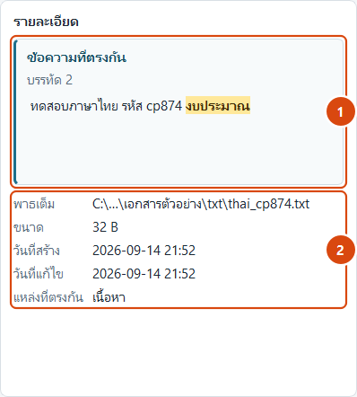
- กล่องข้อความที่ตรงกัน พื้นที่พื้นหลังต่างจากส่วนอื่นอย่างชัดเจน แสดงข้อความจากเอกสาร 2–3 บรรทัดรอบคำค้น พร้อมไฮไลต์ตำแหน่งที่ตรง และบอกตำแหน่งในเอกสารไว้ด้านบน ข้อความนี้ถูกวาดเป็นข้อความล้วนเสมอ ถ้าเอกสารมีข้อความหน้าตาเหมือนโค้ด ก็จะถูกแสดงตามตัวอักษร ไม่ถูกตีความ
- ข้อมูลของไฟล์ พาธเต็ม (ย่อที่ขอบโฟลเดอร์เมื่อไม่พอ และแสดงเต็มเมื่อชี้ค้าง) ขนาด วันที่สร้าง วันที่แก้ไข และแหล่งที่ตรงกัน (ชื่อไฟล์ เนื้อหา หรือทั้งสอง) ไม่แสดงพาธสัมพันธ์และชนิดไฟล์ซ้ำ เพราะตารางบอกไปแล้ว
11.5 ตัวกรองขั้นสูง

- ตรงตัวพิมพ์เล็ก–ใหญ่
เมื่อเปิด
Budgetจะไม่ตรงกับbudget· มีผลกับภาษาอังกฤษเป็นหลัก - วลีตรงทั้งหมด ทุกคำต้องเรียงติดกันตามลำดับที่พิมพ์ ให้ผลเหมือนการใส่เครื่องหมายคำพูด
- ทั้งคำ
ค้น
budgetจะไม่ตรงกับprebudgeting· มีประโยชน์มากเมื่อค้นคำอังกฤษสั้น ๆ เพราะการค้นแบบ trigram เป็นการค้นข้อความย่อยโดยธรรมชาติ - ช่วงวันที่แก้ไข กรองเฉพาะไฟล์ที่แก้ไขในช่วงเวลาที่กำหนด ถ้าไม่ตั้งค่าจะเว้นว่างไว้ ไม่ใช่แสดงวันที่ปลอม
- ช่วงขนาดไฟล์กรองตามขนาดต่ำสุดและสูงสุดเป็นกิโลไบต์
- โฟลเดอร์ย่อย
จำกัดผลลัพธ์ให้อยู่ใต้โฟลเดอร์ย่อยที่ระบุเท่านั้น เช่น
งบประมาณ\2568
นอกจากนี้ยังมีตัวกรองนามสกุลไฟล์ให้เลือกว่าจะค้นเฉพาะ PDF, DOCX, XLSX หรือ TXT ตัวกรองทั้งหมดทำงานร่วมกันแบบ “และ” คือผลลัพธ์ต้องผ่านทุกเงื่อนไขที่เปิดไว้
11.6 กล่องความคืบหน้าการจัดดัชนี

- ขั้นตอนปัจจุบันบอกว่ากำลังเดินสำรวจไฟล์ กำลังอ่านเอกสาร หรือกำลังปิดงาน
- แถบความคืบหน้า เป็นแบบบอกสัดส่วนจริงเมื่อรู้จำนวนไฟล์ทั้งหมดแล้ว ก่อนหน้านั้นจะเป็นแบบไม่ระบุสัดส่วน
- ไฟล์ที่กำลังทำและตัวนับ จำนวนไฟล์ที่จัดดัชนีแล้ว ไม่เปลี่ยนแปลง ข้ามไป และล้มเหลว
- ปุ่มยกเลิก หยุดที่ขอบเขตของไฟล์ถัดไป สิ่งที่ทำไปแล้วยังใช้ได้ ดัชนีไม่เสียหาย
เมื่อจบงาน ถ้ามีไฟล์ที่มีปัญหา ระบบจะแสดงรายการพร้อมเหตุผลที่อ่านเข้าใจได้ เช่น “ไฟล์ถูกใส่รหัสผ่าน” “ไม่พบข้อความที่ค้นหาได้ — อาจเป็น PDF จากการสแกน” หรือ “ไฟล์เสียหาย” ซึ่งเป็นผลลัพธ์ปกติ ไม่ใช่ข้อผิดพลาดของโปรแกรม
11.7 เมนูสถานะดัชนี

- อัปเดตดัชนี ตรวจหาไฟล์ที่เพิ่ม แก้ไข หรือถูกลบ แล้วปรับเฉพาะส่วนนั้น เร็วที่สุดและใช้บ่อยที่สุด ปกติไม่ต้องสั่งเอง เพราะการค้นหาทำให้อยู่แล้ว
- สร้างดัชนีใหม่ทั้งหมด อ่านทุกไฟล์ใหม่ทั้งหมดโดยไม่สนลายนิ้วมือ ใช้เมื่อสงสัยว่าดัชนีไม่ตรงกับความจริง หรือหลังอัปเดตโปรแกรมเป็นเวอร์ชันที่ตัวอ่านเอกสารเปลี่ยนไป
- ลบดัชนี ลบเฉพาะดัชนีของโฟลเดอร์ที่เลือก ไม่ลบเอกสารของผู้ใช้ และสร้างใหม่ได้เสมอ
- เปิดโฟลเดอร์ข้อมูลโปรแกรม
เปิด
%LOCALAPPDATA%\Advance File Search\ซึ่งมีดัชนี ไฟล์ตั้งค่า และบันทึกการทำงาน มีประโยชน์เวลาต้องส่งไฟล์บันทึกให้ผู้ดูแลระบบ - เกี่ยวกับโปรแกรม เวอร์ชัน คำแถลงความเป็นส่วนตัว ข้อจำกัดที่ควรทราบ และสัญญาอนุญาตของซอฟต์แวร์ที่นำมาใช้ (เดิมอยู่บนแถบเครื่องมือ ย้ายมาที่นี่เมื่อเพิ่มปุ่มคู่มือการใช้งาน)
11.8 กล่องตั้งค่า

- แท็บทั้งสาม การสร้างดัชนี · การค้นหา · ความเป็นส่วนตัวและบันทึก
- ข้ามไฟล์ที่ใหญ่กว่า ค่าเริ่มต้น 500 MB ไฟล์ที่ใหญ่กว่านี้จะถูกข้ามเพื่อไม่ให้การจัดดัชนีค้างนาน
- จัดดัชนีไฟล์ที่ซ่อนอยู่ ปิดไว้โดยปริยาย ไฟล์ระบบจะถูกข้ามเสมอไม่ว่าตั้งค่าอย่างไร
- จัดดัชนีไฟล์ .md .csv และ .log ด้วย เปิดรูปแบบข้อความเพิ่มเติมนอกเหนือจาก .txt
- จัดดัชนีหัวกระดาษและท้ายกระดาษของ DOCX เปิดไว้โดยปริยาย เพราะเลขที่หนังสือและชื่อหน่วยงานในเอกสารราชการไทยมักอยู่ตรงนั้น
แท็บ การค้นหา ตั้งค่าจำนวนผลลัพธ์สูงสุด จำนวนข้อความตัวอย่างต่อไฟล์ และขอบเขตการค้นเริ่มต้น แท็บ ความเป็นส่วนตัวและบันทึก ตั้งค่าภาษา ระดับของบันทึกการทำงาน และเลือกได้ว่าจะให้บันทึกพาธไฟล์ลงไฟล์บันทึกหรือไม่ (ปิดไว้โดยปริยาย)
11.9 ปุ่มประจำแถวในตาราง

- ปุ่มเปิดโฟลเดอร์ ปุ่มไอคอนขนาด 30 × 24 จุด กดแล้วเปิด File Explorer พร้อมเลือกไฟล์นั้นไว้ให้ ตั้งแต่รอบที่ 5 เรียกผ่านฟังก์ชันของ Windows โดยตรง จึงรองรับเส้นทางที่มีช่องว่างได้ถูกต้อง
- ปุ่มเปิดไฟล์ เพิ่มในรอบที่ 5 กดแล้วเปิดเอกสารด้วยโปรแกรมที่ผูกไว้ทันที หากเครื่องไม่มีโปรแกรมสำหรับชนิดนั้น ระบบจะเปิดหน้าต่าง “เปิดด้วย” ของ Windows แทน
11.10 การค้นภาษาไทยและตำแหน่งที่พบ


ทั้งสองภาพนี้คือผลลัพธ์ของการตัดสินใจเรื่องตัวแยกคำในหัวข้อ 3.2 และการแบ่งหน่วยข้อความ ในหัวข้อ 3.4 หากเลือกตัวแยกคำมาตรฐาน ภาพซ้ายจะไม่มีผลลัพธ์เลย และหากเก็บเอกสารเป็นก้อนเดียว ภาพขวาจะบอกได้เพียงว่า “พบในไฟล์นี้”
11.11 ไอคอนของโปรแกรม
ไอคอนถูกวาดใหม่ในแต่ละความละเอียด (8 ขนาด ตั้งแต่ 16 ถึง 256 จุด) แทนการย่อจากภาพใหญ่ภาพเดียว เพราะการย่อภาพ 256 จุดลงมาเป็น 16 จุดทำให้รายละเอียดเละ ที่ขนาดเล็กกว่า 24 จุด เส้นข้อความในเอกสารถูกตัดออกและเส้นขอบเปลี่ยนเป็นสีเข้มขึ้น เพื่อให้ยังมองเห็นได้บนแถบชื่อเรื่อง พื้นหลังโปร่งใสทั้งหมด
11.12 ปุ่มลัดบนแป้นพิมพ์
| ปุ่มลัด | ทำอะไร |
|---|---|
| Ctrl + F | ย้ายเคอร์เซอร์ไปที่ช่องค้นหา |
| Enter ในช่องค้นหา | เริ่มค้นหา |
| Enter ในตารางผลลัพธ์ | เปิดไฟล์ที่เลือก |
| Ctrl + Shift + F | กาง/พับตัวกรองขั้นสูง |
| Ctrl + Shift + E | เปิดโฟลเดอร์ของไฟล์ที่เลือก |
| Ctrl + Shift + C | คัดลอกพาธเต็มของไฟล์ที่เลือก |
| F5 | อัปเดตดัชนี |
12 ขอบเขตการทำงาน ข้อจำกัด และสเปคเครื่อง
12.1 ขอบเขตที่ระบบทำได้
| เรื่อง | ทำได้แค่ไหน |
|---|---|
| รูปแบบเอกสาร | PDF, DOCX, XLSX, TXT (และเพิ่ม .md, .csv, .log ได้ในหน้าตั้งค่า) |
| ภาษา | ไทยและอังกฤษ ทั้งในชื่อไฟล์ ชื่อโฟลเดอร์ และเนื้อหา · เลขไทย ๒๕๖๘ และเลขอารบิก 2568 ค้นแยกกันได้ |
| ปริมาณที่ออกแบบไว้ | 2,000–3,000 ไฟล์ต่อโฟลเดอร์ที่จัดดัชนี · ทดสอบจริงที่ 1,000 ไฟล์ใช้เวลาสร้างดัชนี 2.95 วินาที |
| ความเร็วการค้น | น้อยกว่า 10 มิลลิวินาทีในการทดสอบ · เป้าหมายที่ตั้งไว้คือไม่เกินประมาณ 1 วินาที |
| ขนาดไฟล์ที่อ่าน | ไม่เกิน 500 MB ต่อไฟล์ (ปรับได้ถึง 4 GB) |
| จำนวนผลลัพธ์ | 200 ไฟล์ต่อการค้นหนึ่งครั้ง (ปรับได้ถึง 5,000) |
| ที่เก็บไฟล์ | ไดรฟ์และโฟลเดอร์ในเครื่องเท่านั้น |
| ผู้ใช้พร้อมกัน | หนึ่งหน้าต่างต่อหนึ่งผู้ใช้ · ผู้ใช้หลายคนบนเครื่องเดียวกันมีดัชนีแยกกัน |
12.2 ข้อจำกัดที่ต้องทราบ
ข้อจำกัดเหล่านี้เป็นการตัดสินใจโดยตั้งใจ ไม่ใช่ข้อบกพร่อง และทุกข้อถูกแสดงไว้ในกล่อง “เกี่ยวกับโปรแกรม” ในตัวโปรแกรมด้วย
ไม่มี OCR
PDF ที่ได้จากการสแกนเป็นภาพจะไม่มีข้อความให้ค้น ระบบรายงานว่า “ไม่พบข้อความที่ค้นหาได้” ซึ่งเป็นผลลัพธ์ปกติ ไม่ใช่ความล้มเหลว
ไม่รองรับ .doc และ .xls รุ่นเก่า
รูปแบบก่อน Office 2007 ต้องแปลงเป็น .docx หรือ .xlsx ก่อนจึงจะค้นเนื้อหาได้
Word ไม่มีเลขหน้า
เลขหน้าของ Word เกิดตอนเรนเดอร์เอกสาร ไม่ได้ถูกเก็บในไฟล์ ระบบจึงรายงานเป็น ย่อหน้าหรือตำแหน่งในตารางแทน
Excel ไม่คำนวณสูตรใหม่
ระบบอ่านค่าที่ถูกบันทึกไว้ในไฟล์ ถ้าสูตรไม่เคยถูกคำนวณและบันทึก ค่านั้นจะไม่อยู่ในดัชนี
ค้นแบบข้อความย่อย
ผลจากตัวแยกคำ trigram คือ budget จะตรงกับ prebudgeting ด้วย
ใช้ตัวเลือก “ทั้งคำ” เมื่อไม่ต้องการแบบนั้น
คำค้นสั้นกว่า 3 ตัวอักษร
ใช้ดัชนีไม่ได้ ระบบจะสแกนแบบมีเพดานแทน จึงช้ากว่าปกติเมื่อเอกสารมีจำนวนมาก
12.3 ความต้องการของระบบ

| รายการ | ขั้นต่ำ | ที่แนะนำ |
|---|---|---|
| ระบบปฏิบัติการ | Windows 10 64-bit (รุ่น 1809 ขึ้นไป) | Windows 11 64-bit |
| หน่วยประมวลผล | 2 แกน 1.6 GHz | 4 แกนขึ้นไป |
| หน่วยความจำ | 4 GB | 8 GB ขึ้นไป |
| พื้นที่ว่าง | 500 MB สำหรับโปรแกรม + พื้นที่สำหรับดัชนี | 1 GB ขึ้นไป และควรอยู่บน SSD |
| ความละเอียดจอ | 1366 × 768 | 1920 × 1080 ขึ้นไป |
| สิทธิ์ผู้ใช้ | ผู้ใช้ทั่วไป ไม่ต้องเป็นผู้ดูแลระบบ | เท่ากัน |
| อินเทอร์เน็ต | ไม่ต้องใช้เลย | ไม่ต้องใช้เลย |
| โปรแกรมอื่นที่ต้องติดตั้งก่อน | ไม่มี — ไม่ต้องติดตั้ง Python หรือไลบรารีใด ๆ | เท่ากัน |
winplat
แต่ยังไม่ได้ทำและยังไม่ได้ทดสอบ จึงถือว่า อยู่นอกขอบเขตของเวอร์ชัน 1
12.4 เรื่องที่ต้องตัดสินใจก่อนแจกจ่ายออกนอกองค์กร
pypdf (BSD) หรือ
pdfminer.six (MIT) ได้ เพราะการทดสอบของตัวอ่านเขียนไว้กับ “ผลลัพธ์ที่ต้องได้”
ไม่ได้ผูกกับไลบรารี จึงใช้ตรวจตัวแทนได้ทันทีโดยไม่ต้องแก้การทดสอบ
13 รายงานผลการทดสอบระบบ
ทดสอบบน Windows 11 Education 26200 64-bit · Python 3.12.10 · SQLite 3.49.1 (มี FTS5 และ trigram)
กับไฟล์ที่แพ็กแล้วจริงที่ dist\Advance File Search\AdvanceFileSearch.exe
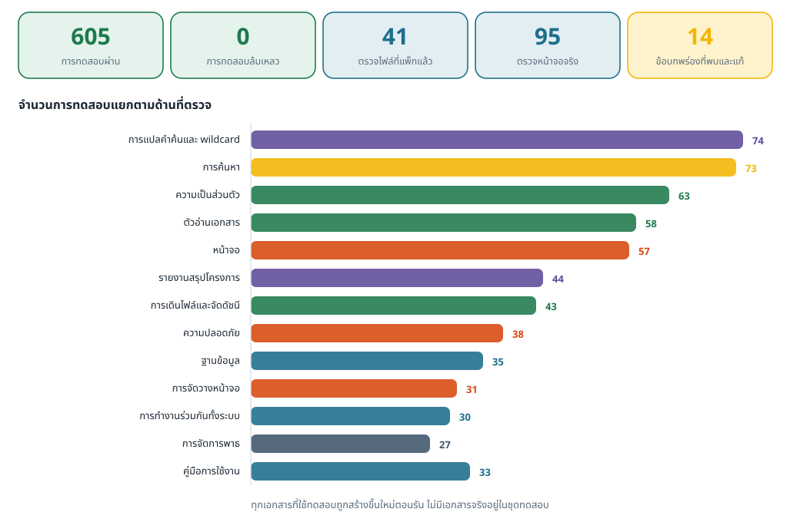
รายการที่ถูกข้ามคือการทดสอบที่ต้องสร้าง symlink ซึ่งต้องเปิด Developer Mode หรือใช้สิทธิ์ผู้ดูแลระบบ พฤติกรรมเดียวกันถูกครอบคลุมด้วยการทดสอบ junction ซึ่งผ่าน ชุดทดสอบทั้งหมดใช้เวลาประมาณ 100 วินาที
13.1 ผลการทดสอบด้านการทำงาน
| ด้านที่ทดสอบ | สิ่งที่ตรวจ | ผล |
|---|---|---|
| รูปแบบเอกสาร | TXT ทุกรหัสอักขระ · PDF ไทย/อังกฤษ/ภาพล้วน/ใส่รหัส/ไฟล์เสีย · DOCX ย่อหน้า ตาราง หัวท้ายกระดาษ · XLSX ชีตซ่อน สูตร 400 แถว | ผ่านทั้งหมด |
| การค้นภาษาไทย | คำกลางข้อความที่ไม่เว้นวรรค · เลขไทย · ชื่อไฟล์ไทย · ชื่อโฟลเดอร์ไทย · ชื่อชีตไทย | ผ่านทั้งหมด |
| ตัวเลือกการค้น | ตรงตัวพิมพ์ · ทั้งคำ · วลีตรงทั้งหมด · * · ? · ขอบเขตชื่อ/เนื้อหา · คำสั้น | ผ่านทั้งหมด |
| ตำแหน่งที่รายงาน | หน้า · ย่อหน้า · ตาราง แถว คอลัมน์ · ชีตและเซลล์ · บรรทัด | ผ่านทั้งหมด |
| การจัดดัชนีแบบเพิ่มทีละส่วน | เพิ่มไฟล์ · แก้ไขไฟล์ · ลบไฟล์ · เปลี่ยนชื่อไฟล์ · สร้างใหม่ทั้งหมด · ทำซ้ำ 3 รอบแล้วตรวจข้อมูลค้าง | ผ่านทั้งหมด · ไม่มีข้อมูลค้าง |
| ประสิทธิภาพ | 1,000 ไฟล์: สร้างดัชนี 2.95 วิ · อัปเดตเปล่า 0.21 วิ · ค้นหา < 10 มิลลิวินาที | ดีกว่าเป้าหมาย |
13.2 ผลการทดสอบด้านความปลอดภัยและความเป็นส่วนตัว
| หัวข้อ | วิธีตรวจ | ผล |
|---|---|---|
| การทำงานแบบออฟไลน์ | สแกนโค้ดทุกโมดูลว่าไม่มีการนำเข้าไลบรารีเครือข่าย · รันจัดดัชนีและค้นหาโดยบังคับให้ฟังก์ชันซ็อกเก็ตโยนข้อผิดพลาด · ตรวจว่าไฟล์ที่แพ็กแล้วไม่มี _socket.pyd, _ssl.pyd, libssl, libcrypto, Qt6Network.dll |
ผ่าน — ไม่ใช่แค่ไม่ใช้ แต่ไม่มีความสามารถนั้นอยู่ในไฟล์ที่แจก |
| รับเฉพาะพาธในเครื่อง | ทดสอบปฏิเสธ UNC ไดรฟ์เครือข่าย URL และ reparse point | ผ่าน (38 การทดสอบ) |
| บันทึกการทำงานไม่รั่วข้อมูล | รันงานจริงแล้วค้นหาคำจากเอกสาร คำค้น และข้อความตัวอย่างในไฟล์บันทึก | ผ่าน — ไม่พบข้อความใดเลย |
| การป้องกัน SQL injection | คำค้นที่มีอักขระพิเศษของ SQL และของ FTS ถูกส่งผ่านพารามิเตอร์เสมอ | ผ่าน |
| การป้องกันการทำงานนานผิดปกติ | คำค้นที่ตั้งใจให้ช้า · ไฟล์ ZIP ที่ขยายตัวมหาศาล · บรรทัดข้อความยาว 250 KB | ผ่าน (พบและแก้ 1 จุดระหว่างทดสอบ) |
| ข้อมูลจากภายนอกไม่ถูกตีความ | เอกสารที่มีข้อความหน้าตาเหมือนโค้ดหรือแท็ก ถูกแสดงเป็นตัวอักษรล้วน | ผ่าน |
13.3 การตรวจไฟล์ที่แพ็กแล้ว (41 รายการ)
รันด้วย Python ของระบบ ไม่ใช่ Python ของสภาพแวดล้อมที่ใช้สร้าง เพื่อพิสูจน์ว่าไฟล์ที่แจก ไม่ต้องพึ่งเครื่องมือของผู้พัฒนา ผลคือผ่านทั้ง 41 รายการ ครอบคลุม
- เปิดได้โดยไม่ต้องมี Python · สร้างดัชนีและค้นหาได้จริง · ค้นภาษาไทยได้
- ไฟล์
.exeปลอมที่ใส่ไว้ในโฟลเดอร์ทดสอบไม่ถูกจัดดัชนีและไม่ถูกเรียกทำงาน - สร้างโฟลเดอร์ข้อมูล บันทึกการทำงาน และฐานข้อมูลได้ถูกต้อง ไม่มีร่องรอยข้อผิดพลาด
- เปิดซ้ำแล้วถูกปฏิเสธด้วยตัวล็อกกันเปิดซ้ำ
- ไม่มีไลบรารีเครือข่ายในชุดไฟล์ · ไม่มีไฟล์
.batหรือ.cmd - เอกสารประกอบครบ:
README.txt,PRIVACY.txt,LICENSES\11 ไฟล์ และManual\index.html
13.4 ข้อบกพร่องที่พบระหว่างทดสอบและแก้ไขแล้ว
| # | อาการ | ความรุนแรง | การแก้ไข |
|---|---|---|---|
| 1–8 | ข้อบกพร่องของชั้นแกนกลางในรอบแรก เช่น BOM ของ UTF-16 หลุดเข้าไปในดัชนี คำค้นบางรูปแบบทำให้การเทียบช้าผิดปกติ และการนับสถิติของรอบจัดดัชนีคลาดเคลื่อน | ต่ำ–กลาง | แก้แล้วทั้งหมด พร้อมเพิ่มการทดสอบกันการเกิดซ้ำ |
| 9 | ข้อความสถานะเก่าค้างอยู่หลังการค้นครั้งใหม่ | ต่ำ | ล้างสถานะเมื่อเริ่มค้นใหม่ |
| 10 | logging.handlers ดึง socket ติดเข้ามาในชุดไฟล์ | ต่ำ แต่ขวางคำรับรองเรื่องออฟไลน์ | เขียนตัวหมุนไฟล์บันทึกเอง |
| 11 | ไม่ได้เรียกตั้งไอคอนของโปรแกรม แถบชื่อเรื่องจึงเป็นไอคอนเปล่า | ต่ำ | โหลดไอคอนหลายความละเอียดตอนเริ่มโปรแกรม |
| 12 | พาธยาวในแผงรายละเอียดถูกตัดหายทั้งชื่อโฟลเดอร์ | กลาง | ใช้ป้ายที่ตัดข้อความเองที่ขอบโฟลเดอร์ |
| 13 | คอลัมน์ “ข้อความที่ตรงกัน” ถูกบีบจนอ่านไม่ได้เมื่อฟอนต์ใหญ่ขึ้น | กลาง | ลดความกว้างคอลัมน์อื่นและกำหนดความกว้างขั้นต่ำ |
| 14 | การค้นหาที่ชนกับการจัดระเบียบดัชนีในเบื้องหลัง ล้มด้วย vtable constructor failed แล้วคืนผลลัพธ์ว่าง ผู้ใช้เข้าใจว่า “ไม่พบ” |
สูง | จำแนกข้อผิดพลาดชั่วคราวของ SQLite แล้วลองใหม่หนึ่งครั้ง · เพิ่มการทดสอบ 4 รายการรวมถึงการรันตัวอ่านชนตัวเขียนจริง |
13.5 สิ่งที่ยังต้องให้คนตรวจด้วยตนเอง
- เฝ้าดูการเชื่อมต่อเครือข่ายด้วยโปรแกรมมอนิเตอร์ ส่วนที่ทดสอบอัตโนมัติได้ผ่านหมดแล้ว และไฟล์ที่แจกไม่มีไลบรารีเครือข่ายเลย แต่การเฝ้าดูโปรเซสจริงตลอดการใช้งานหนึ่งรอบเป็นการยืนยันด้วยตาที่เครื่องมืออัตโนมัติแทนไม่ได้
- ทดสอบบนเครื่องสะอาด เครื่อง Windows ที่ไม่เคยติดตั้ง Python และเครื่องมือสำหรับนักพัฒนา เพื่อยืนยันว่าคัดลอกโฟลเดอร์ไปแล้วเปิดใช้ได้ทันที
- ตัดสินใจเรื่องสัญญาอนุญาตของ PyMuPDF ตามที่อธิบายไว้ในหัวข้อ 12.4 — เป็นการตัดสินใจของเจ้าของโครงการ ไม่ใช่งานทางเทคนิค
14 การปรับปรุงหลังรายงานฉบับแรก
โครงการนี้ส่งมอบเป็นห้ารอบ รอบแรกคือระบบที่ครบตามข้อกำหนดตั้งต้น อีกสองรอบถัดมาเกิดจากการที่ผู้ใช้ได้ลองใช้ของจริงแล้วขอปรับ หัวข้อนี้บันทึกไว้ว่าแต่ละรอบเปลี่ยนอะไรและเพราะอะไร
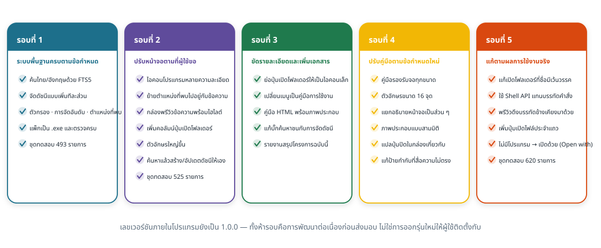
14.1 รอบที่ 1 — ระบบพื้นฐาน (ชุดทดสอบ 493 รายการ)
ส่งมอบระบบครบตามข้อกำหนด: ค้นหาไทย/อังกฤษด้วย FTS5 trigram, จัดดัชนีแบบเพิ่มทีละส่วน,
ตัวกรองและการจัดอันดับ, รายงานตำแหน่งที่พบ, หน้าจอสองภาษา, แพ็กเป็น .exe
พร้อมเอกสารประกอบและชุดตรวจไฟล์ที่แพ็กแล้ว
14.2 รอบที่ 2 — ปรับหน้าจอตามการใช้งานจริง (ชุดทดสอบ 525 รายการ)
| สิ่งที่เปลี่ยน | เหตุผล |
|---|---|
| เพิ่มไอคอนโปรแกรมหลายความละเอียด | แถบชื่อเรื่องและแถบงานเคยเป็นไอคอนเปล่า |
| เอาคอลัมน์ “ตำแหน่ง” ออกจากตาราง | ตำแหน่งควรอยู่คู่กับข้อความที่มันอธิบาย ไม่ใช่แยกเป็นคอลัมน์ |
| เพิ่มกล่องพรีวิวข้อความพร้อมไฮไลต์ | ผู้ใช้ต้องการเห็นข้อความจริงก่อนตัดสินใจเปิดไฟล์ |
| ตัดพาธสัมพันธ์และชนิดไฟล์ออกจากแผงรายละเอียด | ซ้ำกับที่ตารางแสดงอยู่แล้ว |
| เพิ่มคอลัมน์ปุ่มเปิดโฟลเดอร์ | ลดขั้นตอนจาก “เลือกแถวแล้วกดปุ่มด้านล่าง” เหลือคลิกเดียว |
| เพิ่มขนาดตัวอักษรทั้งระบบ | อ่านง่ายขึ้นเมื่อใช้งานต่อเนื่องนาน ๆ |
| เอาปุ่ม “อัปเดตดัชนี” ออกจากหน้าจอหลัก | เปลี่ยนเป็นกดค้นหาแล้วระบบจัดการดัชนีให้เอง ผู้ใช้ไม่ต้องจำลำดับ |
14.3 รอบที่ 3 — ขัดรายละเอียดและเพิ่มเอกสาร
| สิ่งที่เปลี่ยน | เหตุผล |
|---|---|
| ย่อปุ่มเปิดโฟลเดอร์เป็นไอคอนขนาดคงที่ 30 × 24 จุด และลดความกว้างคอลัมน์จาก 104 เหลือ 58 จุด | ปุ่มเดิมขยายตามความกว้างคอลัมน์จนเด่นเกินผลการค้นหา ซึ่งผิดลำดับความสำคัญ |
| เปลี่ยนปุ่ม “เกี่ยวกับ” บนแถบเครื่องมือเป็น “คู่มือการใช้งาน” และย้าย “เกี่ยวกับโปรแกรม” ไปไว้ในเมนูดัชนี | ผู้ใช้ต้องการทางเข้าคู่มือที่เห็นได้ทันที ส่วนกล่องเกี่ยวกับต้องคงไว้เพราะเป็นที่อยู่ของคำแถลงความเป็นส่วนตัวและสัญญาอนุญาต |
| เพิ่มคู่มือการใช้งานฉบับ HTML พร้อมภาพประกอบและภาพหน้าจอจริง | ผู้ใช้ปลายทางต้องการเอกสารที่เปิดอ่านได้เองโดยไม่ต้องติดตั้งอะไรเพิ่ม |
| แก้ข้อบกพร่องการค้นหาที่ชนกับการจัดดัชนี | เป็นผลข้างเคียงของการเปลี่ยนในรอบที่ 2 ที่ทำให้การค้นและการจัดดัชนีทำงานพร้อมกันจริงเป็นครั้งแรก (รายละเอียดในหัวข้อ 7.1) |
| เพิ่มรายงานสรุปโครงการฉบับนี้ | เอกสารสำหรับผู้ตรวจรับและผู้ดูแลระบบ แยกจากคู่มือผู้ใช้ |
14.4 รอบที่ 4 — ปรับคู่มือการใช้งานตามข้อกำหนดใหม่
| สิ่งที่เปลี่ยน | เหตุผล |
|---|---|
| เขียนคู่มือการใช้งานใหม่ทั้งฉบับ ให้รองรับการแสดงผลทุกขนาดจอ และใช้ตัวอักษรขนาด 16 จุดขึ้นไปทั้งฉบับ | ผู้ใช้เปิดคู่มือจากทั้งเครื่องคอมพิวเตอร์และอุปกรณ์พกพา คู่มือเดิมออกแบบไว้สำหรับจอกว้างเป็นหลัก · ขนาด 14 จุดที่กำหนดไว้ตอนแรกอ่านยากเกินไป จึงปรับขึ้นเป็น 16 จุดทั้งฉบับ |
| แยกคำอธิบายหน้าจอหลักเป็น 4 ส่วน แต่ละส่วนมีภาพและหมายเลขกำกับของตนเอง | ภาพเดียวที่มีหมายเลขกำกับ 14 จุด เกินกว่าที่ผู้อ่านจะติดตามได้ในคราวเดียว |
| เพิ่มภาพหน้าจอย่อยที่ยังไม่เคยมี ได้แก่ แท็บการค้นหา แท็บความเป็นส่วนตัว และกล่องเกี่ยวกับโปรแกรม | ข้อกำหนดระบุให้จับภาพและอธิบายหน้าจอย่อยทุกหน้า |
| เพิ่มภาพประกอบแบบสามมิติอีก 4 ภาพ (วัตถุประสงค์ · ลักษณะงานที่นำไปใช้ · โฟลเดอร์โปรแกรม · ปัญหาที่พบบ่อย) | ข้อกำหนดระบุให้ใช้ภาพประกอบที่ทันสมัยและเป็นทางการ |
| แปลปุ่ม “Close” ในกล่องเกี่ยวกับโปรแกรมเป็นภาษาไทย | พบระหว่างจับภาพหน้าจอ ปุ่มมาตรฐานของ Qt ใช้ข้อความภาษาอังกฤษของตนเอง ทั้งที่ส่วนอื่นของกล่องแปลครบแล้ว |
| แก้ป้ายกำกับตัวเลือกในหน้าตั้งค่าที่สื่อความไม่ตรง | ตัวเลือกสำหรับ “จดจำตัวกรองไว้ใช้ครั้งถัดไป” เคยใช้ป้ายว่า “ตัวกรองขั้นสูง” ซึ่งอ่านแล้วเข้าใจเป็นสวิตช์เปิดปิดตัวกรอง |
14.5 รอบที่ 5 — แก้ไขตามผลการทดลองใช้งานจริง (ชุดทดสอบ 620 รายการ)
ผู้ใช้ทดลองใช้โปรแกรมกับเอกสารจริงแล้วพบปัญหาสามข้อ ซึ่งแก้ไขในรอบนี้ทั้งหมด
| อาการที่ผู้ใช้พบ | สาเหตุที่แท้จริง | การแก้ไข |
|---|---|---|
| กดปุ่มเปิดโฟลเดอร์แล้วไม่เปิดโฟลเดอร์ที่ถูกต้อง ทั้งที่เส้นทางที่แสดงเมื่อชี้ค้างถูกต้อง มักเกิดกับโฟลเดอร์ชื่อภาษาไทยที่มีการเว้นวรรค | มิได้เกิดจากภาษาไทย แต่เกิดจาก ช่องว่าง ในเส้นทาง
โปรแกรมเรียก explorer.exe /select,<เส้นทาง> โดยส่งเป็นอาร์กิวเมนต์เดียว
Windows จึงใส่เครื่องหมายอัญประกาศครอบทั้งอาร์กิวเมนต์เมื่อมีช่องว่าง
ทำให้ Explorer ไม่รู้จักสวิตช์ /select ของตนเอง แล้วเปิดโฟลเดอร์ปริยายแทน |
เลิกใช้บรรทัดคำสั่ง เปลี่ยนไปเรียกฟังก์ชันของ Windows โดยตรง
(SHOpenFolderAndSelectItems) ซึ่งรับเส้นทางเป็นข้อความ จึงไม่มีการตีความอัญประกาศอีก
หากระบบเลือกแฟ้มไม่ได้ จะเปิดโฟลเดอร์ที่เก็บแฟ้มแทน |
| ข้อความที่ตรงกับคำค้นทางด้านขวาสั้นเกินไป อ่านแล้วยังไม่แน่ใจว่าใช่แฟ้มที่ต้องการหรือไม่ | หนึ่งบรรทัดของแฟ้มข้อความ หรือหนึ่งย่อหน้าสั้น ๆ ถูกเก็บเป็นหนึ่งหน่วย เมื่อหน่วยนั้นสั้น ข้อความที่แสดงจึงสั้นตามไปด้วย | เมื่อข้อความที่ได้สั้นกว่า 150 อักขระ ระบบจะดึงหน่วยข้อความที่อยู่ก่อนหน้าและถัดไป อย่างละ 2 หน่วยมาต่อกัน แล้วสร้างข้อความตัวอย่างใหม่จากข้อความที่ต่อแล้ว พร้อมขยายกรอบพรีวิวเป็น 4 บรรทัด |
| ต้องการเปิดแฟ้มจากแถวผลลัพธ์ได้ทันที และต้องการให้เปิดได้แม้เครื่องไม่มีโปรแกรมนั้น | เดิมมีเพียงปุ่มเปิดโฟลเดอร์ประจำแถว การเปิดแฟ้มต้องเลือกแถวแล้วกดปุ่มที่แถบล่าง และเมื่อไม่มีโปรแกรมที่ผูกไว้ ระบบแจ้งเพียงว่าเปิดไม่ได้ | เพิ่มปุ่มเปิดไฟล์ไว้ถัดจากปุ่มเปิดโฟลเดอร์ในทุกแถว และเมื่อ Windows แจ้งว่าไม่มีโปรแกรมที่ผูกกับชนิดแฟ้มนั้น ระบบจะเปิดหน้าต่าง “เปิดด้วย” (Open with) ให้ผู้ใช้เลือกโปรแกรมเองแทนการแจ้งความล้มเหลว |
1.0.0 ทั้งห้ารอบ เพราะทั้งหมดเกิดขึ้นก่อนส่งมอบ
จึงเป็นการพัฒนาต่อเนื่องของรุ่นเดียวกัน ไม่ใช่การออกรุ่นใหม่ให้ผู้ใช้ติดตั้งทับ
เมื่อมีการแก้ไขหลังส่งมอบจริง ให้เพิ่มเลขเวอร์ชันที่
advance_file_search\core\constants.py แล้วบันทึกไว้ในหัวข้อนี้ตามรูปแบบเดียวกัน
คือ เวอร์ชัน · วันที่ · สิ่งที่เปลี่ยน · เหตุผล
14.4 เอกสารอ้างอิงของโครงการ
| เอกสาร | เนื้อหา |
|---|---|
Manual\index.html | คู่มือการใช้งานสำหรับผู้ใช้ปลายทาง |
Manual\report.html | รายงานสรุปโครงการฉบับนี้ |
docs\TEST_REPORT.md | รายงานผลการทดสอบฉบับเต็ม |
docs\SECURITY.md | แนวปฏิบัติด้านความปลอดภัยและรายการตรวจก่อนปล่อยรุ่น |
docs\BUILD.md | วิธีสร้างโปรแกรมและวิธีสร้างเอกสารประกอบใหม่ |
docs\decisions\ | บันทึกการตัดสินใจเชิงสถาปัตยกรรม 10 ฉบับ |
LICENSES\INDEX.txt | สัญญาอนุญาตของซอฟต์แวร์ที่นำมาใช้ทั้งหมด |